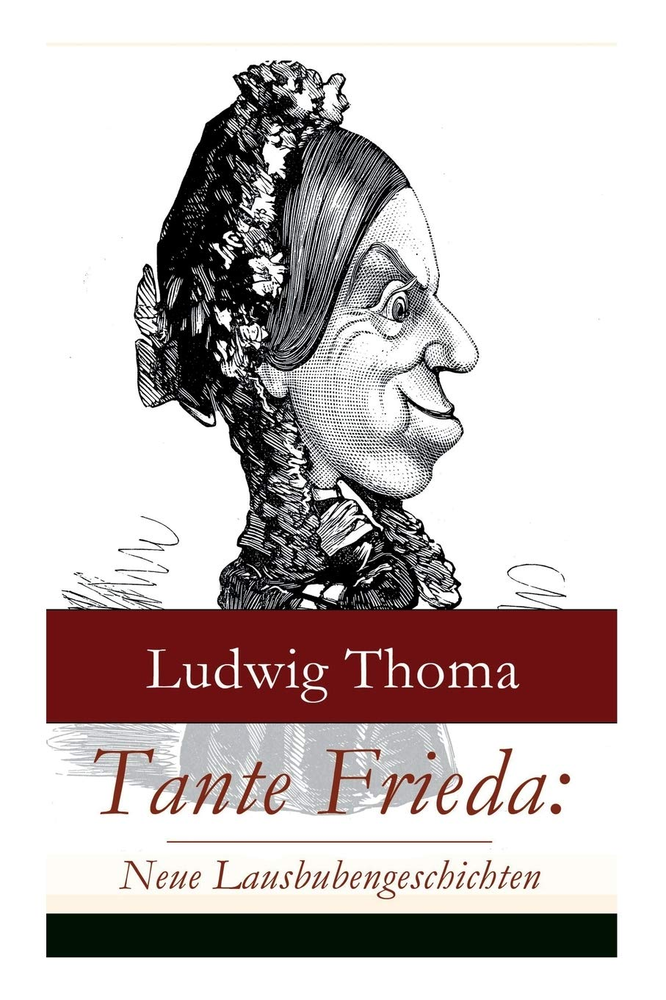

0
стр. з
0
сторінок

завантаження...

Содержание
Слово к читателюГЛАВА I. ПСИХОЛОГИЧЕСКИЕ И ЭМОЦИОНАЛЬНЫЕ ОСОБЕННОСТИ РУКОПАШНОГО БОЯОптимальное боевое состояниеЛичность бойца"Дефектная ведомость"Сила волиЭмоции и чувстваГЛАВА II. БОЕВАЯ ПСИХОРЕГУЛИРУЮЩАЯ ТРЕНИРОВКА (БПТ)Минимум для самообученияЧто может БПТНемного теорииРасслабление — значит отдыхДыши правильноПрактические советыМагнитофон-помощникПоза значит многоСтруктура БПТУРОК №1 Тема: расслабление правой рукиУРОК №2 Тема: расслабление рук и ногУРОК №3 Тема: расслабление мышц лица и шеи. МаскообразностьУРОК №4 Тема: выход из состояния аутогенной тренировки. ГотовностьУРОК №5 Тема: экран мысленного взора (ЭМВ). Психоэмоциональная нейтрализацияУРОК №6 Тема: звуковая психоэмоциональная нейтрализацияУРОК №7 Тема: концентрация внимания. Переключение внимания. Объёмное зрениеУРОК №8 Тема: Тренировка представлений. Идеомоторная тренировкаУРОК №9 Тема: самокодированиеУРОК №10 Тема: беглостьГЛАВА III МЕТОДЫ ПСИХОЛОГИЧЕСКОЙ ПОДГОТОВКИЭтапы психологической подготовкиI. Мирный этапВолевая подготовкаПреодоление болиII. Предбоевой этапУстранение отрицательных переживанийПрограмма подготовительных действийВведение в оптимальное боевое состояниеIII. Боевой этапСамоовладениеЛицоПозаИ НАКОНЕЦ - БОЙ!Послесловие
СЛОВО К ЧИТАТЕЛЮ
Вы держите в руках издание в некотором роде уникальное. Это первое практическое пособие (самоучитель) по психологической самоподготовке к рукопашному бою. Оно, в основном, предназначено для военнослужащих различных родов войск (в том числе и внутренних), а также для работников милиции. Но советы, данные в пособии, могут выборочно использоваться и спортсменами, и при массовых занятиях по самозащите без оружия. В целом же самоучитель должен заинтересовать самые широкие слои населения.
Отличие данного пособия от ему подобных в том, что здесь нет ссылок, заимствований или просто модных подражаний различным школам рукопашного боя, которые сейчас выросли как грибы после дождя. Расчет строится на логике, обычаях, нравах и традициях, свойственных европейцам, которые проверены веками, научно обоснованны и имеют практическое значение.
Предлагаемая психологическая самоподготовка поможет при желании каждому бойцу (в самом широком значении этого слова) достичь высокого профессионального уровня. Мы не говорим "настоящего" бойца, так как "ненастоящего" бойца не бывает. А, если и бывает, то только до первого боя.
Индивидуальность боевых действий предполагает индивидуальную самоподготовку. Исходя из этого требования и разрабатывали авторы это методическое пособие.
В него включены самые современные методы психологической регуляции и специфическая модификация аутогенной тренировки, которые можно использовать при подготовке к бою. Одна из задач пособия — систематизация разрозненных методов психологического воздействия.
Много внимания авторы уделили формированию личности бойца на основе вечных моральных принципов цивилизованного мира.
В предлагаемом методе боевой психорегулирующей тренировки (БПТ) авторы отказались от распространенных формул самовнушения, предпочитая им логические доказательства. Вся информация построена на элементарной логике, причинно следственных связях. Это не требует зазубривания (даже отвергает его). С этой же целью в самоучителе широко используется принятая спортивная терминология. В основу данного пособия лег многолетний опыт проведения занятий с самыми различными группами слушателей, включая и военнослужащих.
Авторы преднамеренно не смягчали понятийную сущность слова "убивать". Не заменяли его на традиционное "ликвидировать", "уничтожать". В индивидуальной самоподготовке деликатность не приемлема. Однако будут неправы те, кто обвинят авторов в насаждении культа жестокости и насилия.
Да, по своей сути бой жесток. Конкретные рекомендации стоят в тесной связи с эмоционально-конкретными понятийными представлениями. Но именно поэтому сглаживание острых углов недопустимо. Лучший способ предупреждения возможного раскаяния бойца — осознанное предвидение результатов своей деятельности. Методы борьбы с отрицательными переживаниями и психологическая мобилизация представлены в пособии по-этапно. Это определяет место каждого метода в общей системе подготовки.
Самоучитель рассчитан на индивидуальную самоподготовку, особенно в тех родах войск, в которых высока вероятность рукопашного боя.
Авторы не считают данное пособие полностью законченным, благо накопленный материал дает почву для дальнейших разработок. Будем очень благодарны всем, кто выскажет письменные замечания и пожелания.
Авторы
Глава I
ПСИХОЛОГИЧЕСКИЕ И ЭМОЦИОНАЛЬНЫЕ ОСОБЕННОСТИ РУКОПАШНОГО БОЯ
Оптимальное боевое состояние
В предлагаемом методическом пособии рассмотрены вопросы индивидуальной психологической самоподготовки бойца, а также любого индивидуума к рукопашному бою. Вид боя выбран не случайно. В предвидении любых боевых действий у человека возникает особое психологическое и эмоциональное состояние. Но максимального уровня оно достигает в рукопашном бою. И это вполне понятно — осуществляется непосредственный контакт с противником (соперником).
Боевое состояние воина в оптимальном варианте объединяет три взаимосвязанные составные части, три компонента:
- мыслительный,
- эмоциональный,
- физический.
1. Мыслительный компонент. Он заключается в умении быстро выявить слабые стороны (брешь) противника, скрыть и замаскировать свое внутреннее состояние, полностью сосредоточиться на предполагаемых боевых действиях.
2. Эмоциональный компонент. Он отражает внутреннее волнение и возбуждение. Уровень эмоционального возбуждения может быть высоким, средним и низким. Для бойца очень важно находиться на среднем уровне, который обеспечивает оптимальное боевое состояние. Поэтому необходимо научиться быстро определять уровень эмоционального возбуждения. Его можно объективно проконтролировать, проверив частоту пульса. Настоящий боец обязан уметь считать свой пульс без помощи секундомера. Его можно определять по ощущению внутренней пульсации в области сердца, живота, шеи, висков, затылка. Это возможно делать в любой момент и в любой обстановке. Необходимо заметить, что в спокойной обстановке пульсация в указанных местах практически малоощутима. Но при волнении или физической нагрузке пульсация увеличивается за счет повышения артериального давления. Пульс при волнении учащается гораздо быстрее, чем при физической нагрузке. Контролировать волнение необходимо особенно тщательно в самый канун боя. У некоторых бывает такое сердцебиение, что сердце готово "выпрыгнуть" из груди. Чтобы отличить пульс при допустимом волнении от пульса при чрезмерном волнении, необходимо иметь достаточный опыт участия в соревнованиях. Именно в них ты запоминаешь свой ритм ощущений внутренней пульсации, при котором хорошо себя чувствуешь: есть желание драться, чувствуешь силу и готовность мышц, полностью сконцентрировал внимание на противнике, ощущаешь внутренний "зуд", азарт и т. д.
Предположим, что в этот момент у тебя пульс 120-130 ударов в минуту, это и есть твой оптимальный ритм сердцебиения, при котором чувствуешь себя уверенно, надежно. Если пульс меньше, то ты недостаточно настроился (завелся) на бой. Если больше, то есть опасность "перегореть". Как избавиться от чрезмерного волнения будет сказано при разборе предбоевого и боевого периодов.
3. Физический компонент состоит из ощущений мышечной готовности к действию. Эта готовность тренируется общефизической подготовкой и специальной физподготовкой. Ощутить эту готовность поможет урок №4 боевой психорегулирующей тренировки.
Все вышеперечисленные компоненты (мыслительный, эмоциональный, физический) и составляют т. н. оптимальное боевое состояние.
Большие требования предъявляются к понятию
Личность бойца
Это объясняется большой ответственностью перед обществом. Пройдя спецподготовку, ты овладеешь навыком уничтожать противника будучи невооруженным. Но психологическое и физическое оружие всегда будет при тебе, а они, поверь, не менее мощные.
Общество должно быть гарантированно от случайного и необдуманного применения такого оружия.
Это предполагает высокие моральные качества и самодисциплину бойца. Готовность к самопожертвованию не мыслима без таких качеств. Вспомни: ведь во все времена и у всех народов были образы богатырей. В них каждый народ вкладывал свои лучшие духовные качества и идеалы. Формальными и случайными они быть не могли. С древних времен люди восхваляли единство духовных и физических сил человека, бойца, богатыря. Путь от Ильи Муромца до Ван Дамма далек, но он весь пронизан гуманистическим пафосом. Это путь к созиданию не только тела, но и духа.
"Дефектная ведомость"
С чего же начинается психологическая самоподготовка?
В первую очередь с оценки себя самого как личности. Необходимо искренне разобраться в своих личных достоинствах и недостатках. Надо попробовать сформулировать свои моральные заповеди. Они строятся с учетом высших нравственных принципов, выработанных Человечеством. К ним относятся: Долг, Совесть, Честь, Достоинство, Мужество, Принципиальность, Справедливость, Скромность и другие. Необходимо также предельно искренне и четко ответить себе на три вечных вопроса: "Чего я хочу?", "Что я могу?", "Что я должен?". В этих "хочу", "могу" и "должен" заключен весь человек, его внутренний мир. его личность. Если сумеешь ответить себе на эти вопросы, то получишь ответ на вопрос: "Кто я такой?". Отвечая на вопросы, сможешь лучше уяснить себе свои сильные и слабые стороны; определить, какие качества следует развить в себе, а какие надо отбросить. Получится своеобразная "дефектная ведомость" своей личности и улучшенный "проект" самого себя. Сделать это необходимо, иначе психорегуляция будет неконкретной, бестолковой и безрезультатной. Начинать психологическую самоподготовку с "дефектной ведомости" необходимо еще и потому, что с этого момента и до окончания карьеры бойца ты должен постоянно воспитывать (тренировать) свой бойцовский характер. Этим достигаются 2 цели:
- Воспитываются необходимые качества защитника Родины, бойца.
- Вырабатывается и укрепляется сила воли.
Придется во многом "ломать" себя, чтобы постоянно следовать этим принципам. Такая "ломка" происходит только волевым усилием. Это основной способ тренировки воли. Некоторые бойцы только ради такой постоянной тренировки начинают формировать свой бойцовский характер.
Чтобы составить "дефектную ведомость", необходимо каждое свое качество отметить (-), (+-), (+). Если (-), то данное качество в тебе отсутствует; если (+-), то присутствует, хоть и недостаточно; если (+), то присутствует в достаточной степени.
Каждое нижеперечисленное качество отметь соответствующим знаком. Получится 3 группы:
- со знаком (-)
- со знаком (+-)
- со знаком (+)
Как работать с такой "дефектной ведомостью" будет подробно сказано в уроке №9. А пока разреши напомнить тебе о сути нравственных категорий и черт бойцовского характера, которые значат не меньше, чем и физические качества.
Долг — моральная обязанность перед обществом.
Совесть — способность к моральному самоконтролю, умению самому объективно оценивать совершаемые поступки.
Честь — поддержание на должном уровне своей репутации в обществе.
Достоинство — твое отношение к самому себе.
Мужество — волевая способность действовать решительно, мобилизуя все свои силы, вплоть до самопожертвования.
Мужество базируется на таких чертах характера, как смелость, стойкость, выдержка, самообладание, самоотверженность.
Патриотизм — преданность и верность своей Родине.
Принципиальность — поведение, обусловленное определенной идеей, убеждением.
Справедливость — отсутствие предвзятости, предубеждения к кому-либо.
Скромность — критическое отношение к своим собственным заслугам и недостаткам, отказ от исключительных достоинств или особых прав.
Вспомни также про такие понятия, как: правдивость, трудолюбие, верность, искренность, сознательность, убежденность, ответственность, настойчивость. Разберись основательно, в какой мере эти качества в тебе присутствуют. Пометь их соответствующим знаком.
Теперь продумай такое понятие, как "быть правым". Ты — боец! Следовательно, являешься защитником интересов своего народа. Ты обязан быть правым с точки зрения общественных интересов прежде всего. В противном случае личный интерес может взять верх над интересом общества. А это — путь к эгоизму, несправедливости, самосуду и саморасправе и в конце концов к поражению. Отстаивать свои личные интересы можно только в рамках моральных норм, принятых обществом, в котором живешь.
Необходимо стремиться к тому, чтобы уже упомянутые нравственные принципы приобрели форму склонностей и привычек. Только тогда у тебя сформируется бойцовский характер, когда будешь следовать своим моральным заповедям без внешнего и внутреннего принуждения. Формирование такого характера возможно только на основе самовоспитания.
Самовоспитание базируется на 4 "китах" — это самоубеждение, самокритика, самопринуждение и самоограничение.
Из приведенного определения вытекает, что самовоспитание невозможно без такого понятия как
Сила воли
Тренировка воли заключается в систематическом каждодневном выполнении может быть и неинтересных, но осмысленных и полезных действий. Запомни: без сильной воли никогда не станешь бойцом. Это хорошо видно из следующей схемы: Боец (как личность) — бойцовский характер — самовоспитание — воля. По этой цепочке и изложен предыдущий материал по принципу: от общего — к частному.
В практической деятельности ею пользуются в обратном порядке, воля — самовоспитание — бойцовский характер — боец. Как видно из этой схемы, воля — начало всех начал. Про волевую подготовку еще не раз будет идти речь впереди.
Эмоции и чувства
А сейчас переходим к анализу психоэмоциональных состояний, возникающих в бою. Разберем наиболее типичные из них: испуг, страх, ярость, агрессия и жалость.
Для того, чтобы управлять своими чувствами, надо хорошо знать структуру этих понятий. Без конкретного осмысливания их управлять собой невозможно. Не станем подробно излагать научное представление этих сложных понятий. Ограничимся самым необходимым для нашей темы.
В основе наших чувств лежат эмоции. Нельзя ставить знак равенства между эмоциональными реакциями и чувствами. Чувство — осознанная переживаемая эмоция. Например: тревога — общий эмоциональный фон; тревога, переживаемая в конкретной ситуации с конкретными действующими лицами — страх. Волнение тревоги — эмоция, переживание страха — чувство.
Аналогичное соотношение у следующих эмоций и чувств: удовольствие — радость, гневливость — злость. Более сложное соотношение у жалости, трусости, ярости, ненависти.
Каждое наше чувство состоит из врожденных и приобретенных сторон. Поэтому мы такие неодинаковые, разные наши характеры и черты личности. Одни имеют наилучшие сочетания бойцовских качеств, а другие — менее удачные. Это вовсе не означает, что одни могут стать хорошими бойцами, а другие нет. Просто одним легче ими стать, а другим — труднее. Человек может бесконечно себя совершенствовать и воспитывать.
Эмоции представляют собой приспособительные реакции организма к изменяющейся внешней среде. Это приспособление должно точно соответствовать характеру воздействия на организм, не допуская "зашкаливания", как в сторону преуменьшения опасности, так и в сторону ее преувеличения. Оно должно быть устойчивым. Когда говорят об эмоциональной неуравновешенности человека, подразумевают большие колебания эмоций в ту или иную сторону в конкретной ситуации. Эмоциональная неуравновешенность может характеризоваться и длительным "застреванием" на переживаниях, хотя ситуация давно изменилась и потеряла свою остроту, актуальность.
Наиболее отличительным и важным свойством эмоций является их связь с мышцами и внутренними органами. Это может выражаться в напряженном лице, сдавленном голосе, стесненном дыхании, застывании, оцепенении, заикании, нервной дрожи, учащенном сердцебиении, "мурашках" на коже, недержании мочи, позывах на понос и т. д. Замечено, что даже небольшие переживания сказываются на ритме и глубине дыхания. Редко эти ощущения проявляются все сразу и своевременно. Но наличие даже одного из них указывает на отрицательное перевозбуждение (мандраж).
Испуг. Страх. Трусость.
Страх является наиболее опасным переживанием. Полностью бесстрашных людей нет, сколько бы об этом не говорили. В той или иной степени его испытывают все. Страха не надо стесняться. Его надо научиться подавлять. Герои, богатыри, бойцы как раз и отличаются от других людей умением подавлять страх в нужный момент. Сильный, внезапный испуг порождает оцепенение, растерянность. Он может парализовать всю психическую и физическую деятельность. Он сопровождается описанными выше ощущениями, вплоть до не самых приличных.
Когда оцепенение проходит, человек, как правило, начинает ориентироваться и оценивать ситуацию. Если ситуация стала безопасной, то страх не наступает. Страх возникает в ожидании или непосредственно в самой опасности. Когда из нее возможен выход, то страх снижается до уровня стимулирующего волнения. Оно способствует поиску выхода из создавшегося положения. Если выход не найден, то может возникнуть трусость. Она проявляется в виде паники, бегства, затаенной бездеятельности (притворства), сдачей в плен, предательства.
Следует отметить, что уровень стимулирующего (среднего) волнения является нормой в предбоевом и боевом периодах. Он соответствует оптимальному боевому состоянию. Такое волнение мобилизует твои силы, помогает сконцентрироваться на необходимом, придает уверенность. Объективно контролировать такой уровень волнения надо по пульсу, о чем уже говорилось.
Только что мы рассмотрели внутренние превращения чувств по убывающей схеме, испуг — страх — стимулирующее волнение. Эта схема срабатывает при внезапном столкновении с противником. Но бывает и обратное превращение: тревога — страх — испуг. Например, ты ожидаешь поединка с неизвестным противником — волнение тревоги. Стал известен конкретный противник и подробности предстоящего боя — страх. Внезапно увидел врага — испуг. Испуг обусловлен внезапностью. Страх базируется на переоценке (недооценке) возможностей противника, факторе "незнакомости". Недооценка чаще приводит к испугу, т.к. срабатывает фактор неожиданности при столкновении с противником. Чаще всего преувеличивают физическое превосходство противника. Но даже реальное такое превосходство не имеет решающего значения в бою, хотя и "шапкозакидательство" к успеху не приводит.
Для нанесения решающего удара огромной силы не требуется. Главное — это ловкость, хитрость, тактика и техника боя.
Приведенные взаимопревращения отрицательных переживаний не являются неизбежными. Они возникают у неподготовленных людей. Оценивая противника, ты оцениваешь и свои шансы на победу. Чем лучше ты подготовлен, тем, естественно, больше таких шансов. Правильная, то есть объективная оценка соперника и самого себя способствует предотвращению испуга и страха. Подробнее о преодолении этих состояний будет сказано при разборе этапов психологической подготовки.
Злость. Ярость. Агрессия.
Злость — осознанная, направленная на кого-либо эмоциональная гневливость.
Практически под злостью подразумевают уровень враждебности к противнику в сочетании с желанием драться. Отличительной чертой такой злости является способность мобилизовать, собрать воедино энергию человека и сделать его готовым к необходимым действиям. Злость прямо противоположна страху, поэтому способна уменьшать и подавлять его.
В повседневной жизни злость нередко возникает тогда, когда мы не можем достичь чего-нибудь, очень желаемого из-за наличия препятствия или собственной неспособности. В этой связи выражение "разозлиться на самого себя" становится логически понятным.
Часто злость появляется в ответ на личное оскорбление, обиду, обман, насилие, посягательство на твои моральные принципы и жизнь. Самый высокий уровень враждебности бывает тогда, когда злость сочетается такими чувствами как отвращение и презрение.
Отвращение — чувство, возникающее в ответ на разложившиеся (испорченные) в физическом или психологическом смысле вещи, явления, организмы. Всегда хочется ликвидировать объект отвращения или самому отстраниться от него.
Презрение — чувство неуважения и превосходства над кем-либо. Презрение возникает, как правило, в ответ на посягательство на общечеловеческие ценности. Презирают, например, предателей, садистов, насильников, воров, жадных и т. д. Иногда презрение может носить расовый, национальный или религиозный характер.
Если злость подталкивает к нападению, отвращение — к ликвидации, то презрение позволяет все это сделать хладнокровно.
Злость, отвращение, презрение — классическая триада враждебных чувств к врагу. Чувствовать ее накануне боя весьма желательно.
Об этом речь впереди.
Ярость — наивысший уровень злости, который не поддается сознательному усмирению. Выраженный эмоциональный фон в сочетании с неспособностью критически оценивать свои действия делают ярость "слепой". Такая "слепота" в бою чревата непродуманными действиями. Отсутствие тактики, маневра и хитрости у "ослепленного" бойца делает его очень уязвимым. Иногда такое состояние противник специально провоцирует. Уберечься от такой ярости помогает самообладание и контроль над ситуацией.
Злость и тем более ярость — состояния относительно кратковременные. Они исчисляются в минутах, часах и редко днях.
Если злость носит стойкий и длительный характер, то это — ненависть.
Она имеет гораздо более глубокую и тесную связь с моральными и общечеловеческими принципами. Этим объясняется ее стойкость и длительность.
Агрессия — реализация злости или ярости на практике. Если две последние являются только психическим состоянием, то агрессия — осознанное действие. Это и есть физическое выяснение отношений. Агрессия подразделяется на условную и абсолютную. Условная не ставит целью причинение физического страдания. Например, одноклассник, заигрывая с девочкой, легонько дернул ее за косу. Это и есть условная агрессия. Но если тот же мальчик преднамеренно сильно сделал это и тем самым заставил страдать от боли — абсолютная агрессия. В ее основе лежит злость, ненависть, ярость, отвращение и презрение (хотя бы одно из перечисленных). Бой всегда агрессивен.
Жалость.
На это чувство надо обратить особое внимание, т. к. оно является твоим врагом №2 после страха. Основу жалости составляет врожденная эмоциональная чувствительность и приобретенная способность к сопереживанию. Она всегда избирательна. Один и тот же человек в одной ситуации испытывает жалость, а другой — жестокость. Жалость проявляется в форме заботы, сочувствия, ласки, желания помиловать и т. д. Такое чувство в бою к врагу недопустимо. Иногда противник, в неблагоприятных для него условиях, специально стремится вызвать это чувство у соперника. Для этого враг притворяется смертельно раненым, жалким и мучимым сильной болью. Жалость подавляет решительность и инициативу, чем незамедлительно пользуется враг. Жалость устраняется соответственной настройкой и силой воли. Об этом речь впереди.
Но жалость способствует твоему поражению не только в момент боя. Она может сразить тебя и после него, например, при виде поверженного врага. Может появиться тяжелейшее переживание — раскаяние. Оно сопровождается резким упадком сил, самоуничижением, подавленностью. Такой боец в следующем бою сам становится жертвой.
Жестокость применима только к врагу. Воспитывать в себе всеобщую жестокость к членам окружающего общества недопустимо.
Для предотвращения в себе жалости и раскаяния необходимо рассмотреть один важный и довольно щепетильный вопрос. Его не принято обсуждать публично. Но нередко он встает перед бойцом после первого же выигранного боя, вызывая раскаяние. Речь идет про глагол "убивать". Преднамеренно не заменяем его общепринятыми "ликвидировать", "уничтожить". В душевном возгласе победителя, мучимого раскаянием, слышится: "Что я наделал?! Я же — убил!!!". Попробуй мысленно в этом возгласе заменить "убил" на "уничтожил". В данном случае деликатность перед самим собой не приемлема. Сколько существует все живое на Земле, столько же существует и этот глагол, имеющий широкую палитру значений.
Убить человека ради корыстных целей, нарушив мораль и закон общества — значит стать убийцей. Убить по приговору суда — палачом. Убить по приговору своей совести, но в нарушение законов и порядков — мстителем. Убить, защищая свое Отечество — защитником Родины. Такой защитник может считаться Героем.
Вот какой широкий диапазон трактовки этого слова. Однозначно его оценивать нельзя. Обязательно надо сопоставлять многие условия. Главное — цель, ради чего и кого пускать в ход этот жестокий глагол. Раз ты призван защищать свою Родину, то можешь быть только Защитником и Героем и имеешь полное моральное право убивать ее врагов. Это надо усвоить раз и навсегда! Не занимайся больше самокопанием в этом вопросе. Сомнения парализуют решительность и должны быть отброшены до начала первого боя.
Героями не рождаются, ими становятся. Это всем известная истина. Под таким становлением надо понимать не ситуацию свершения подвига, а процесс самовоспитания личности.
Одна и та же ситуация одних делает героями, а других предателями.
Воспитать в себе необходимые качества и избавиться от отрицательных переживаний поможет предлагаемая психологическая подготовка.
Глава II
БОЕВАЯ ПСИХОРЕГУЛИРУЮЩАЯ ТРЕНИРОВКА (БПТ)
Минимум для самообучения
Активные действия человека, его сила воли, противопоставленные угрозе собственной жизни, сознательная саморегуляция нервно-психических процессов позволяет не только выжить, но и действовать в опасности, не теряя разума. Психическая подготовка — это и есть специальная тренировка головного мозга. Современный бой невозможно выиграть, если тренировать только мышцы и отдельные приемы единоборства. Физическую и психическую подготовку необходимо проводить параллельно и одновременно.
Предлагаемая методика рассчитана на людей, имеющих определённые:
- интеллектуальный минимум,
- волевой минимум,
- максимум желания работать над собой.
1. Интеллектуальный минимум включает в себя средний общеобразовательный уровень и соответствующий ему словарный запас. С учетом этого и составлено наше пособие.
2. Волевой минимум заключается в настойчивости и самостоятельности. Настойчивость предполагает, что человек способен к длительному и неослабевающему напряжению энергии для достижения цели. Никакие трудности его не должны отпугивать, и он всегда неуклонно будет двигаться вперед.
Настойчивость коренным образом отличается от упрямства.
Упрямый человек неспособен отказаться от ранее малопродуманного решения, несмотря на разумные основания. Упрямство выражается в неумении заглянуть в глаза обстоятельствам, гибко отнестись к изменившейся ситуации. Поэтому
упрямство — слабость воли. Недаром это качество приписывают ослам.
Самостоятельность заключается в том, что человек совершает поступок, ориентируясь не на давление окружающих, не на случайные влияния, а исходя из своих убеждений, знаний и представлений о том, как надо поступать в тех или иных ситуациях.
Прямой противоположностью самостоятельности является внушаемость. Она заключается в том, что человек легко поддается чужому влиянию, его действия складываются не из собственных мнений и убеждений, а в результате чужеродных веяний. В бою необходимо постоянно принимать самостоятельные решения в соответствии с меняющейся ситуацией, поэтому внушаемость (как и самовнушение) может быть вредным.
Предлагаемая методика психологической подготовки построена на логике и самоубеждении без внушения и самовнушения. Естественно, что волевой минимум в виде настойчивости и самостоятельности обеспечивают только минимальное начало самоподготовки. О других волевых качествах речь пойдет впереди.
3. Максимум желания работать над собой — обязательное условие самоподготовки. Самосовершенствование — главная цель многих единоборств. Физические и психические упражнения являются лишь средствами достижения цели.
Максимум желания работать над собой — это не столько желание быть лучше вообще, сколько стремление кропотливо избавляться от недостатков.
Что может БПТ
Боевая психорегулирующая тренировка (в дальнейшем — БПТ) базируется в основном на приемах аутогенной тренировки, максимально адаптированной к твоей специфике. В предлагаемых уроках БПТ традиционные методы аутогенной тренировки будут сочетаться со специфической психоэмоциональной подготовкой. При помощи БПТ ты сможешь снимать нервное возбуждение, быстро восстанавливать мышечную работоспособность, регулировать самочувствие, избавляться от переживаний в любой обстановке, быстро концентрировать внимание, утверждать в себе необходимые бойцовские качества, проводить психическую мобилизацию.
Предлагаемая БПТ позволяет полностью овладеть ею при самостоятельных занятиях.
Если ты раньше занимался аутогенной тренировкой, то рекомендуем все забыть. Это не способ рекламы предлагаемой новой методики. Просто по-новому всегда легче усвоить материал, чем переучиваться. Ранее сформировавшиеся стереотипы будут просто мешать обучению.
При описании психофизиологических процессов используется упрощенная терминология и чувственно-образные схемы.
Перед тем, как непосредственно приступить к урокам, необходимо усвоить некоторые теоретические основы. Без этого самообучение невозможно.
Немного теории
Начнем с мифа о Юлии Цезаре. Он гласит о том, что Цезарь мог одновременно выполнять несколько дел. Если миф воспринимать буквально, то ты тоже можешь быть таким. Например, ты сидишь и обедаешь, читаешь детектив, поправляешь рукой волосы, отвечаешь односложно на вопросы и т.д. И все это делаешь одновременно. Таких одновременных действий можно выполнять несколько. Все они исполняются автоматически, подсознательно, за исключением одного. Активная сознательная деятельность (мысль) всегда одна в конкретное время. В приведенном примере сознательным является увлеченное чтение книги. Все остальные действия — подсознательные.
В нашем сознании в голове не могут быть две мысли одновременно, то есть, мы не можем думать одновременно о разном, в разных направлениях. Но бывает и так, что мысль длится мгновение, уступая место другой. Это создает иллюзию одновременного разнопланового обдумывания.
Мысль всегда проговаривается нашим внутренним голосом.
Проговаривать одновременно несколько мыслей, естественно, невозможно. Этот закон понадобится при работе с экраном мысленного взора (ЭМВ) в уроке №5. Мысленно будешь следить и контролировать за расслаблением мышц лица, тем самым не дашь ворваться в мозг посторонним мыслям.
Ты уже запомнил, что мысль всегда проговаривается внутренним голосом. Убедись в этом на примере чтения данного текста. Если читаешь вдумчиво, то невольно все проговариваешь. Давно уже установлено, что даже во сне мы думаем в сопровождении собственного внутреннего голоса. Часто мышление во сне сопровождается переживаниями. В детстве многие нередко плачут во сне. Мысли наши тесно связаны с нервными центрами переживаний. Ну, а если смотреть сон не осмысливая? Получится что-то похожее на немое кино: изображение (сон) есть, а звука (внутреннего проговаривания мыслей) нет. Нет внутреннего проговаривания, значит нет мысли, т.к. она не бывает без внутренней речи. Если нет мысли, то нет обдумывания сновидений, а значит нет и переживаний. Получается, что переживание не бывает без мысли, а мысли не бывает без внутреннего проговаривания собственным голосом.
Проговаривание обязательно сопровождается напряжением голосовых связок, мышц гортани, языка и частично шеи. Степень напряжения недостаточная, чтобы появился звук, но вполне достаточная, чтобы почувствовать это напряжение. Следовательно, контролируя расслабление соответствующих мышц, ты избавляешься от внутренней речи, а в результате — от переживания. Подробнее об этом в уроке №5.
Наш мозг состоит из нервных центров. Они представляют собой скопление нервных клеток, которые управляют деятельностью какого-либо органа. Например, центр правой руки, центр левой ноги, центр мышц лица и т. д. Эти центры управляют напряжением, расслаблением и готовностью к действию соответствующих мышц. Есть центры, которые руководят деятельностью наших внутренних органов.
Учитывая специфику пособия, остановимся подробнее на мышечных центрах. Они выполняют посредническую функцию между самими мышцами и мыслью. Какую команду мысль даст центру, такую работу выполнит соответствующая мышца. Центры всегда держат их в боевой готовности. Они полностью не отключаются даже во сне. Но импульсы от центров во сне недостаточны для совершения мышечного действия.
Дать центрам возможность отдохнуть, полностью их "отключить", значит дать максимальный покой мышцам. В таком состоянии они гораздо быстрее восстанавливают работоспособность, чем во сне.
Отключать центры надо через ощущение расслабления в мышцах. Чувство отключения центров мышц сопровождается следующими ощущениями: лень (то есть, нет сил и желания шевелиться и двигаться), слабость, вялость, ощущение неподвластности конечностей твоей воле. Возможны ощущения, что конечности стали необычно огромные или маленькие. Иногда даже утрачивается всякая чувствительность и может появиться чувство, словно руки и ноги отделены от туловища. Если появились такие ощущения - прекрасно! Отдыхает, восстанавливается не только мышца, но и ее регулирующий нервный центр. При столь глубоком расслаблении центр утрачивает частично контроль над своей мышцей, поэтому возникает иллюзия отключения.
При этом, давая покой мышечным центрам, даешь хороший отдых большей части мозга.
Расслабление — значит отдых
А теперь рассмотрим подробнее технику расслабления мышц. Хоть сто раз повторяй, что руки расслаблены, ничего не получится, пока хоть один раз не прочувствуешь все ощущения расслабления. Возьми и сильно сожми сейчас кисть правой руки в кулак. Теперь напряги всю руку. Что же произошло в твоих мышцах? Ты напряг их, сдавил сосуды и кровь временно ушла к внутренним органам. Затем ты расслабил мышцы. Сосуды уже ничего не сдавливает, и они вновь наполняются кровью под напором сердца. Температура в конечностях чуть ниже, чем во внутренних органах. Следовательно, с притоком крови приходит по сосудам и тепло. Этот приток крови в расслабленные мышцы дает два ощущения: тяжести и тепла. Тяжесть — за счет дополнительного количества крови. Тепло — за счет разницы температур внутренних органов и конечностей. Эта разница температур такая незначительная, что в обычном состоянии она не заметна. Но она хорошо ощущается в процессе аутогенной тренировки. Не надо только внушать себе тяжесть и тепло. Нужно просто обратить на них внимание, что гораздо эффективнее. Это обязательные ощущения, сопровождающие любое расслабление мышц, причем только полное расслабление. Под термином "расслабление" надо понимать следующую триаду:
- Отсутствие минимального напряжения в мышцах,
- Ощущение тепла,
- Ощущение тяжести.
Пункты "2" и "3" являются прямым следствием пункта "1". При этом все процессы триады проходят одновременно. Для лучшего освоения расслабления рекомендуется на первых занятиях прочувствовать данные "пункты" в предложенной последовательности. Степень расслабления зависит от выраженности этих ощущений (смотри уроки №№1-4).
Дыши правильно
А теперь проанализируем процесс дыхания в рамках нашей специфики. Обращал ли ты внимание на свое дыхание перед тем, как поднять, например, гирю или штангу? Сначала делал глубокий вдох, задерживал дыхание (пауза), поднимал тяжесть и затем делал выдох. Таким дыханием организм сам мобилизует свою энергию, поэтому оно называется мобилизующим.
Замечал ли ты, как зевают перед сном? Следует короткий неглубокий вдох, затем длительный выдох и пауза. После такого зевания следует спокойное дыхание. Таким дыханием организм вводит себя в спокойное состояние, поэтому оно называется успокаивающим.
Мобилизующее дыхание — удлиненный глубокий вдох (4 сек.), пауза длительностью в полвздоха (2 сек.), короткий, энергичный выдох (2 сек.). Длительность вдоха превышает выдох приблизительно в два раза.
Успокаивающее дыхание — короткий неглубокий вдох (2 сек.), выдох длительностью в 2 вдоха (4 сек.), пауза в полвздоха (1 сек.). Это дыхание уменьшает частоту сердцебиения при волнении.
Чтобы правильно научиться дышать по мобилизующему и успокаивающему типу, необходимо выработать у себя "чувство секундомера". Это чувство внутреннего темпо-ритма с интервалом в одну секунду. Вырабатывается оно без особых затруднений. С этой целью обрати внимание на звуковой сигнал по радио, который дается за несколько секунд до начала следующего часа. Эти звуковые сигналы подаются с интервалом в одну секунду. Постарайся на слух запомнить их. Внутреннее чувство времени присуще каждому. Периодически сверяй свой "секундомер" с этими звуковыми сигналами. Абсолютной точности не требуется, а приблизительная вырабатывается без затруднений. С этой же целью можно использовать телевизионную заставку с бегущей секундной стрелкой. По секундному темпо-ритму удобно сверять свой пульс. Если частота темпо-ритма совпадает с частотой ощущений внутренней пульсации, то пульс равен 60 ударов в минуту. Если на один интервал (секунду) темпо-ритма приходится 2 ощущения, то пульс равен 120 ударам в минуту. Можно натренировать улавливать 3 ощущения на два интервала (90 ударов) и 5 ощущений на два интервала (150 ударов).
Тренироваться определять пульс нужно с настройки своего темпо-ритма на мысленный звуковой сигнал точного времени. Как только запустил секундный темпо-ритм, переключай внимание на ощущения пульсации. На каждое такое ощущение сгибай очередной палец в кулак. Этот простой прием поможет быстро освоить контроль дыхания и пульса по времени.
Мобилизовывать или успокаивать себя с помощью дыхания нужно научиться в любой ситуации и обстановке. Обычно два-четыре такта дыхания уже дают эффект. Свое количество таких тактов определяешь сам с учетом тренированности и состояния в конкретной ситуации.
Каждое занятие по боевой психорегулирующей тренировке (БПТ) необходимо начинать с успокаивающего дыхания, а заканчивать — мобилизующим.
У многих людей при сосредоточении на внутренних ощущениях появляется эффект "ныряния". Это — мысленное погружение в ту область тела, которую необходимо хорошо прочувствовать. Это и есть концентрация внимания на ощущениях в нужной области. В такой момент ощущения с остальных мест заметить трудно или просто невозможно.
Практические советы
Не пугайся кажущейся громоздкости приведенной теории. Она построена на логике и ее легко можно усвоить. Если надо, перечитай еще раз, но не зубри. А теперь — практические советы.
Когда закроешь глаза во время занятий БПТ, то возможны три варианта направления внутреннего взора.
- Смотри чуть вверх, как бы изнутри на середину внутренней поверхности лба. Это направление наиболее часто применяют при освоении второго раздела тренировки.
- Взор направляй прямо перед собой. Такое направление избирают, когда представляют все то, о чем думают. Например, расслабляя правую руку, "видишь" ее перед собой.
- Скользи мысленным взором по тому участку тела, с которым работаешь в данный момент. Например, если с левой рукой, то и взор направь влево; если с ногами, то и взор направь вниз.
Не спеши переходить от одного урока к другому. Критерием перехода должно быть полное овладение предыдущим уроком. Физиологические процессы, происходящие в организме, малоощутимы, поэтому не жди от первых занятий ярко выраженных ощущений. При разборе урока достаточно прочувствовать рекомендуемое хотя бы в минимальной степени. Переходи к другому уроку тогда, когда появится чувство, что лучшего в данный момент не достичь. Такое происходит, обычно, на среднем уровне освоения. Переход от среднего уровня к высшему (совершенству) происходит постепенно при систематических занятиях.
Совершенству предела нет. Не надо бояться опоздать овладеть БПТ. Помни мудрость: "Все приходит вовремя к тому, кто умеет ждать". Чем внимательнее будешь изучать и осваивать урок, тем быстрее и качественнее будет потом избирательная беглость.
Медленный темп в начале тренировки дает ускорение в конце. Не удивляйся, если периоды успешных занятий будут чередоваться с менее успешными. От избытка желания скорее овладеть БПТ может появиться чувство неудовлетворенности в результатах, что приводит к разочарованию или безразличию. У каждого человека периоды творческого подъема чередуются со спадом. Это важно помнить и не делать длительных перерывов в занятиях. Перерывы в 5-7 дней ведут к "зарастанию" тропинок ощущений.
Заниматься надо ежедневно, проводить по 1-2 занятия. Если урок поддается с трудом, го можно разделить его на две-три части. Каждую отрабатывай до необходимого уровня.
Нельзя умственно насиловать себя "во что бы то ни стало". Мозг требует спокойной и благожелательной тренировки, а не подстегивания. Не рекомендуем заранее составлять график освоения уроков.
Запомни, что немедленных (быстрых), и в то же время стойких и длительных результатов не бывает.
Магнитофон-помощник
На начальных стадиях обучения можно использовать магнитофон. Работай с ним в следующем порядке. Сперва прочитай весь урок. Затем перечитай и продумай трудные места. Составь подробную схему этапной последовательности практической части урока. Вот примерная схема урока №1: "Принимаю позу. Успокаивающее дыхание. "Ныряю" в правую руку. Ни одна мышца не напряжена. Теплая пульсация внутри руки. Подушечки пальцев. Край рукава. Теплое набухание руки. Ощущение отключения руки".
Такая схема указывает только на последовательность переключения твоего внимания. Магнитофон просто напомнит, на что нужно обратить внимание. Надиктуй схему обычной речью, тихим и спокойным голосом. В местах, где надо прочувствовать ощущения, делай паузы 10-15 секунд. Длительность пауз определяешь сам, с учетом быстроты появления ощущения. С приобретением навыков помощь в магнитофоне-суфлере отпадает.
Начинать учиться расслаблению лучше с рук. Правше — с правой, а левше — с левой. Последовательность расслабления такая: правая рука — левая рука — левая нога — правая нога — лицо. Мышцы лица расслабляются в таком порядке: лоб — брови — веки — наружные уголки глаз — щеки (жевательные мышцы) — кончик языка (его видимая часть) — корень языка (глубоко внутри шеи) — передние мышцы шеи — затылок и задние мышцы шеи.
Поза значит много
В каких позах проводить занятия? В принципе — в любых, когда достигнешь совершенства. Начинать же осваивать БПТ лучше с классических поз аутогенной тренировки. Первоначально необходимо заниматься лежа. Лежа легче достичь и прочувствовать расслабление. Хорошо овладев способом лежа, начинай заниматься сидя. Научился хорошо делать упражнения сидя, переходи к занятиям стоя. Конечно, стоя полностью не расслабишься, но выборочно 2-й и 3-й разделы БПТ реально выполнимы. По мере совершенствования, условия занятий должны становиться более жесткими. Приучай себя постепенно к бытовому шуму, к свету, к умению заниматься в общественных местах (транспорт, кинотеатр) в присутствии посторонних. Естественно, что позу занятий подбираешь с учетом обстановки. Цель ужесточения условия — умение владеть БПТ в любой позе и ситуации. Разберем подробнее рекомендуемые позы.
Лежа. Ложись на спину таким образом, чтобы голова была прямым продолжением туловища, но чуть приподнята. Она должна не запрокидываться назад и не быть сильно наклонена вперед. Руки свободно лежат вдоль туловища, не касаясь его и стенки. Пальцы рук в естественном согнутом положении. Ладонная поверхность больше обращена книзу. Ноги — на ширине плеч (рисунок 1).

Сидя. Вариант 1. На жестком сидении без спинки (табуретки). Сядь на пол- или треть табуретки. Ссутулься, прогнись в спине. Голову наклони вперед до упора подбородком в грудь. Середина предплечья (от кисти до локтя) лежит свободно на середине одноименного бедра (от колен до туловища). Кисти рук свободно свисают, не касаясь друг друга. Голень к бедру составляет угол 120-140 градусов. Носки стоп развернуты внутрь, что внешне похоже на косолапость. Такой разворот стоп препятствует разброске колен при расслаблении ног (рисунок 2).

Сидя. Вариант 2. На мягком сидении со спинкой. Поставь кресло к стене спинкой на расстоянии 5-10 см. Сядь глубоко в кресло. Голову наклони назад до упора в стенку. Если голова очень запрокидывается назад, то подвинь кресло ближе к стене. Для удобства можешь положить мягкий валик (полотенце, подушечку) под затылок. Если подлокотники кресла широкие и мягкие, то руки положи вдоль на них. При жестких подлокотниках располагай руки по варианту №1. Ноги вытягивай так, как тебе удобнее. Ширина плеч и разворот стоп произвольные. Не рекомендуется ноги вытягивать максимально и ставить их на пятки. Могут быстро "заныть" колени и онеметь пятки. Начинать заниматься сидя лучше с варианта №2 (рисунок 3).

Стоя. Стоя можно заниматься БПТ, прислонившись или облокотившись. Положение головы может соответствовать тому, что и в сидячей позе. Напряжение ног и туловища минимальное, чтобы обеспечить равновесие. Стоя можно тренировать: маскообразность, "выход", экран мысленного взора, концентрацию внимания, объемное зрение, самокодирование (рисунок 4).

Перед каждым занятием старайся не нервничать, не возбуждаться. В начальном периоде самообучения это будет очень мешать. Во время самого занятия не должны отвлекать чувство голода, переедания или желание справить свои естественные нужды. Ослабь ремень, расстегни ворот, разуйся. Желательно избавиться от всего, что создает дискомфорт.
Таким образом, мы осветли теоретические основы БПТ, а сейчас перейдем к практическим урокам.
Структура боевой психорегулирующей тренировки
Предлагаемый курс боевой психорегулирующей тренировки (БПТ) состоит из трех разделов. Это:
- физическая релаксация (расслабление) (уроки №№1, 2, 3);
- психоэмоциональная нейтрализация (уроки №№5, 6);
- физическая и психическая мобилизация (уроки №№4, 7, 8, 9)
Курс рассчитан на 10 уроков. Каждый из них несет новую информацию и основан на хорошем усвоении предыдущего. Урок состоит минимум из 3-5 успешных занятий. Их количество не ограничивается и зависит от индивидуальных способностей к самообучению.
В конце каждого урока приведена схема. Она отражает тематическую последовательность практического занятия.
УРОК №1
Тема: расслабление правой руки.
Все процессы расслабления проще прочувствовать в одной конечности. Правше лучше начинать с правой руки.
Прими свою позу. Дыхание успокаивающее. Закрой глаза. Все внимание на правую руку. Расслабь мышцы, сними малейшее напряжение. Возможно появится "ныряние". В руке нарастает ощущение теплой пульсации. Ты уже знаешь, что это приливает кровь. "Нырни" в кончики, подушечки пальцев и там хорошенько ощути теплую пульсацию.
Теперь переключай внимание на нижний край рукава рубашки. Под рукавом теплее, чем на открытом участке. Ощути эту границу и разницу в тепле. Теперь переключай внимание ("ныряй") внутрь всей правой руки. Там уже не просто теплая пульсация, а чувство теплого набухания руки, распирания. Ощущение такое, словно какой-то насос нагнетает теплую струю. Естественно, что с притоком крови появляется чувство тяжести, сопровождаемое ощущением скованности.
Если все это прочувствовал, то в результате появляется ощущение отключения руки: лень, нет желания и сил шевелить ею; слабость, неподвластность руки твоей воле; рука словно отделилась от туловища.
Не беда, если отключение сразу не наступило. Не спеша повтори занятие, и отключение наступит. Расслабив мышцы и ощутив естественные процессы расслабления, ты отключил соответствующий нервный центр. Предоставь возможность отдохнуть им несколько минут.
Теперь быстро сравни ощущения в правой и левой руках. Заметил огромную разницу? А ведь обе руки отдыхали в одинаковых условиях, т. е. находились в полном покое. Такая разница от того, что ты отключил нервный центр правой руки. Это наглядный пример результата тренировки ощущений.
Если проводил занятия перед сном, то поворачивайся на удобный бок и засыпай. Если предстоит еще работать, то не спеши давать полную нагрузку на правую руку. Выходом из аутогенной тренировки ты еще не владеешь.
Схема: урок №1.
УРОК №2
Тема: расслабление рук и ног.
Точно в таком же порядке расслабляются левая рука и ноги. Обращаем внимание на то обстоятельство, что левая рука ближе к сердцу, поэтому ощущение теплой пульсации может быть более выраженным.
Сердце невозможно расслабить так, чтобы оно отключилось. Но когда расслабились все мышцы тела, кровеносные сосуды сдавливать ничего не будут. Сопротивление сердцу станет минимальным. Ему не понадобится мною энергии, чтобы поддерживать необходимый кровоток. В таком режиме сердце работает, как бы отдыхая. После отключения рук и ног, обрати внимание на область сердца. Может возникнуть впечатление, что сердце окунулось в приятную теплую воду. Ощущение тепла очень полезно, так как оно способствует расширению сосудов сердца. В дальнейшем этим приемом сможешь снимать неприятные ощущения в области сердца, которые возникают на нервной почве.
Приготовься к занятию. Прими позу. Дыхание успокаивающее. Закрой глаза. Все внимание на правой руке, как в уроке №1. После отключения правой руки переходи на левую. Все то же проделай с левой рукой. Далее ощути приятное тепло в области сердца.
Затем "ныряй" в ноги. Можешь работать сразу с обеими ногами. На первых занятиях лучше ноги проработать поочередно. Тактика такая же, как и при занятиях с руками. Но есть некоторые особенности в ощущениях. В ногах лучше ощущается приятная усталость. Это потому, что мышечная масса в ногах больше чем в руках. Ноги устают больше и чаще рук, соответственно и ощущения более яркие. Может появиться чувство приятной ломоты в суставах, приятного гудения, мления в мышцах. Обычно отключение ног не вызывает затруднений.
Напомню, что конечным этапом расслабления является чувство отключения. Только после отключения одной конечности переходи на другую. В дальнейшем расслабляй руки и ноги одновременно, но не в ущерб качеству.
Схема: уроки №№1, 2.
УРОК №3
Тема: расслабление мышц лица и шеи. Маскообразность.
Овладев отключением рук и ног, даешь возможность отдохнуть и восстановиться чуть более, чем половине головною мозга. Не удивляйся, что расслабив все тело, отключил всего половину мозга. Вторую половину составляют нервные центры лица и языка (рисунок 5).

Этот мощный нервный центр необходим потому, что в лице очень много мелких мышц. Благодаря этим мышцам мы имеем такую разнообразную мимику. По лицу можно узнать о чувствах и внутреннем состоянии. Но ты, наоборот, обязан будешь маскировать свои отрицательные переживания. В основе такой маскировки лежит ощущение маскообразности, которое сопровождается расслаблением лица. Поэтому данный урок приобретает дополнительное значение.
В мышцах конечностей чувство расслабления сопровождается триадой, которую ты уже хорошо знаешь. Она влечет за собой комплексное чувство отключения. В мышцах лица расслабление ощущается по-иному. Это объясняется очень маленькими размерами мышц. Приток крови незначителен, поэтому тепло и тяжесть малоощутимы. Следовательно, не следует настраивать себя на обязательное прочувствование этих ощущений (тепла и тяжести).
Вот некоторые особенности ощущений при расслаблении лица.
1. Лоб. Брови.
Проверь, чтобы лоб не был нахмурен, а брови не были сдвинуты. При этом появляется ощущение нависания, наплыва, набухания какой-то тяжести со стороны лба на область глаз.
2. Веки.
Сними еле заметное напряжение в веках. Сразу исчезает дрожание век и прищуривание. Прищуривание легче снимать начиная с наружных уголков глаз. Появляется ощущение наливания век свинцом. Может произойти потемнение в глазах, замедление мыслей. Очень часто в это время появляется легкая сонливость.
3. Щеки (жевательные мышцы).
Зубы не должны быть стиснуты. Рот при этом немного приоткрыт. Степень приоткрывания зависит от наклона головы.
4. Язык.
а) кончик языка (его видимая часть)..
При его расслаблении может появиться ощущение, что язык необычайно большой и не помещается в полости рта. Часть языка располагают между зубами при открытом рте. Не исключено запрокидывание (западание) кончика языка назад, которое устраняется увеличением наклона головы вперед.
б) корень языка. Передние мышцы шеи.
Эта большая часть языка проникает глубоко внутрь шеи. С другими мышцами и связками она образует единый мышечный аппарат шеи. Его расслабление сопровождается снятием всех спазм в горле, всех "комков". Появляется необычное чувство легкости дыхания. Оно сопровождается ощущением необычной легкости на душе. Таким приемом хорошо снимать переживание обиды: "комок в горле", "не хватает воздуха", "камень на душе".
Особо следует подчеркнуть, что снимая малейшее напряжение корня языка, ты расслабляешь гортань и голосовые связки. Этим приемом способствуешь устранению внутренней речи (проговаривания).
Постоянный контроль вниманием за расслаблением корня языка — необходимый компонент избавления от отрицательных переживаний.
5. Затылок. Задние мышцы шеи.
Напряжение этих мышц выражено при страхе. Расслабление сопровождается ощущением запрокидывания головы назад. Создается впечатление, что голова затылком приклеилась, прилипла к своей опоре и невозможно ее оторвать. Так можно снять головные боли, сопровождающиеся ощущением пульсации и чувством "кола" в затылке.
Только что были приведены ощущения по группам мышц. А вот общие итоговые: лицо, как маска, т. е. отечно, одутловато, расплывчато, разбухшее. Дыхание легкое, свободное. Приятная легкость на душе. Туман в голове. Путаются мысли. Сонливость. (Последние три ощущения необязательные).
Если все это ощутил, то мышечные центры лица и шеи отключены. Этот урок является основой всего расслабления, поэтому удели ему достаточно внимания.
Не расстраивайся, если на первых занятиях не почувствуешь все, как надо. На то она и есть — тренировка! Ибо как говорил Суворов: "Тяжело в учении — легко в бою".
Схема: уроки №№1, 2, 3.
Резюме.
Окончено описание первого и самого легкого раздела боевой психорегулирующей тренировки (БПТ) — физической релаксации. Твое внимание обращалось на ощущения, которые обычно сопровождают расслабление мышц. Очень вероятно, что у тебя будут свои ощущения. которые не полностью совпадают с приведенными. Это естественно, так как двух абсолютно одинаковых индивидуумов не бывает. Мы дали лишь типичные ощущения, но не образцово-показательные.
Овладев расслаблением мышц и отключением соответствующих нервных центров, даешь возможность им хорошо восстановиться.
Предвидим закономерный вопрос: "Какое это восстановление сил, если после занятия остается слабость, вялость, скованность, сонливость?" Дело в том, что отключенные центры медленно включаются самостоятельно. Вспомни, например, свое состояние после ночного сна. И хотя отключение во сне неполное, и то — пока расходишься! Одна из задач утренней зарядки (!) и состоит в подключении, запуске этих центров.
Таким "запуском" и займемся на следующем уроке.
УРОК №4
Тема: выход из состояния аутогенной тренировки. Готовность.
Иначе этот урок можно назвать "подключение" потому, что подключаются ранее отключенные нервные центры.
Собственно "выход" заключает в себя "готовность". Если речь идет о состоянии в конце занятия аутогенной тренировкой, то это выход. Если говорить о состоянии мышц в боевом периоде, то — готовность. Поэтому сейчас речь пойдет не просто о выходе из занятия аутогенной тренировкой, а о мышечной готовности к бою.
Напомню, что расслабление мышц конечностей заканчивается ощущением отключения. Лицо имеет свою особенность последовательности ощущений: маскообразность — замедление мыслей — сонливость.
Снятие ощущения отключения проводится в обратном порядке. Сначала лицо и мыслительная деятельность, затем — конечности.
Выход из аутогенной тренировки состоит из двух этапов.
- Снятие ощущения отключения.
- Мышечная готовность к действию.
1. Разберем снятие ощущения отключения в рекомендуемом порядке:
| Ощущения расслабления | Снятие ощущений расслабления |
|---|---|
| 1. Сонливость. Туман в голове | Прислушайся к звукам, которые можешь слышать в данный момент: шорохи, скрипы, голоса, шум улицы и т. д. Сориентируйся, то есть четко осознай, где ты и что делаешь. |
| 2. Замедление мыслей | Внимательно продумай последовательность подключения и прочувствуй готовность к действию. |
| 3. Маскообразность | Обрати внимание на то, что языку уже удобно во рту. Зубы сами сомкнулись и, возможно, произошло глотание. Веки стали легкими. Появилось легкое напряжение (прищуривание) в наружных уголках глаз, ясность в голове. Чувствуешь, что свободно можешь заговорить. |
| 4. Конечности (можно подключать отдельно руки и ноги) | Заметь, что исчезли скованность, тяжесть, лень, усталость, оцепенение. |
2. Мышечная готовность к действию
Она в свою очередь имеет три этапа:
- прочувствование готовности,
- мобилизующее дыхание,
- двигательная разрядка.
Ради этой готовности отдыхали мышцы и центры. Она сопровождается чувственным желанием поскорее напрячь мышцы, дать им нагрузку. Появляются ощущения внутреннего нетерпения к действию, своеобразного мышечного "зуда". Мышцы хорошо отдохнули, соскучились по работе. Нетерпение напрячь мышцы нарастает. Не напрягая мышц, предвкушай мысленно упражнения разрядки, которые сейчас будешь выполнять. Когда мышечное нетерпение достигло ярко выраженного уровня, переходи к мобилизующему дыханию. Сделай 2-4 такта мобилизующего дыхания. На вдохе последнего такта начинаешь двигательную разрядку. Накопленный мышечный энергетический потенциал требует обязательной разрядки. Приучать себя в данной ситуации к "спуску на тормозах", минуя разрядку, нельзя. Мышечная энергия должна гаситься движением.
Напоминаем, что находиться в спокойном положении с закрытыми глазами нужно вплоть до вдоха последнего такта мобилизующего дыхания. Только на высоте этого вдоха: открываешь глаза; резко, с силой выбрасываешь напряженные руки вперед — вверх; одновременно сильно напрягаешь ноги, вытягивая и слегка приподнимая их; делаешь выдох. Длительность напряжения 1-2 секунды. Обычно разрядку делают 1-2 раза.
Обрати теперь внимание на свое самочувствие. В голове ясность, легкость во всем теле. Хочется активной двигательной нагрузки.
Конечно, такое состояние появляется не с первого занятия. Чем больше практика, тем четче и ярче готовность. С этого урока каждое занятие необходимо заканчивать таким выходом. Достигнув хорошего уровня выхода из аутогенной тренировки, тренируй готовность в бодром состоянии, постепенно ужесточая условия. Для этого "нырни" в свои конечности на несколько мгновений. Прочувствуй любые ощущения, которые есть в мышцах в данный момент. После этого сразу переходи на готовность. Почувствовать её поможет память на ощущения готовности. Регулярная и качественная отработка выхода оставляет в памяти яркие и долговременные следы.
Естественно, что ощущения готовности в бодром состоянии (да еще стоя) выражаются меньше, чем в аутогенной тренировке. Но этого вполне достаточно для мобилизации силы и снятия скованности от страха.
В совершенстве мышечная готовность мгновенно вспоминается в боевой позе, если сосредоточить на ней внимание.
Схема: уроки №№1-3, 4.
УРОК №5
Тема: экран мысленного взора (ЭМВ). Психоэмоциональная нейтрализация.
Этим уроком начинаешь осваивать второй раздел боевой психорегулирующей тренировки.
До сих пор ты работал с ощущениями в мышцах. К нервным центрам подбирался через эти ощущения. Теперь будешь учиться быть "на ты" со своими мыслями и переживаниями, отключаться от навязчивых мыслей и отрицательных переживаний.
Вначале несколько дополнений к теории, которая была дана ранее. Ты хорошо знаешь, что такое положительные и отрицательные эмоции. Положительные эмоции сопровождаются приятными переживаниями, а отрицательные — неприятными. Все эмоции тоже имеют свои центры в головном мозгу. В определенном дозированном сочетании положительные и отрицательные эмоции необходимы. Они сопровождают и окрашивают всю нашу жизнь. Но чрезмерные отрицательные эмоции (как и положительные) очень вредны. Они определяют стрессовое состояние, а стрессы способствуют возникновению инфарктов, инсультов, язвенной болезни и т. д. Такие заболевания в обиходе называют "от нервов". Отрицательные переживания стрессового уровня несут с собой страх и парализующий испуг. Тебе надо овладеть этим уроком не для профилактики заболеваний, а для избавления от страха в предбоевом периоде.
Все эмоциональные центры тесно связаны с нашими жизненно важными центрами: сердечно-сосудистым, двигательным, дыхательным, гормональным и т. д. Поэтому, когда ты переживаешь отрицательные эмоции (отрицательные переживания), это всегда сопровождается внутренними изменениями. Вспомни, например, описание состояния при страхе и испуге. Взаимодействие причины и следствия в этом случае можно отобразить следующим образом: поступающая информация (испуг) —мысленная оценка информации (выход не найден) — эмоциональные центры (волнение страха стрессового уровня) — жизненно важные центры (сердцебиение, стесненное дыхание, недержание мочи, мурашки и т. д.). Данная схема работает при любых переживаниях.
Чтобы отрицательная информация не приводила к ненужным последствиям, необходимо разорвать эту цепочку. Но в каком месте возможен реальный разрыв? В какой части цепи можно сознательно вмешаться в нее? Это возможно только в двух местах, а именно: между информацией и оценкой информации; между оценкой информации и эмоциональными центрами. В других местах разрыв невозможен, так как дальше все идет по инерции и воля человека неспособна воспрепятствовать процессу. Можно поставить только два барьера в указанных местах. Про барьер №1 (дезактуализацию) речь впереди. А про барьер №2 поговорим сейчас. Его можно ставить только в состоянии аутогенной тренировки. И это ничто иное как отделение мыслей от переживаний.
Про "это"
Наверно тебе приходилось очень переживать о чем-либо. Ты обращаешься к друзьям за советом, а они в ответ: "Выбрось ты "это" из головы!". Вот и начинаешь выбрасывать "это" из головы. Чем больше стараешься выбросить, тем больше "это" обратно лезет в голову. Так некоторые изводят себя до отчаянного состояния. Если б так просто можно было избавиться от переживаний, человечество давно бы преодолело вредные последствия стрессов. Бесполезно выбрасывать навязчивые мысли только отвлечением. Если даже и смог это сделать, то значит мысли носили ненавязчивый характер. Избавиться же от навязчивых можно только посредством специальной тренировки. Навязчивой мысли надо дать возможность полностью отработать в мозгу столько, сколько она этого требует. Но надо сделать это так, чтобы ее работа прошла в холостую, т.е. не затрагивала эмоциональные центры.
Наш мозг способен не только запоминать переживания, но и способен предвидеть (вообразить) их. Не раз наверно слышал: "Как закрою глаза, так это стоит перед глазами!". Действительно, 80 процентов поступающей в мозг информации идет через наше зрение. Эта зрительная память на психотравмирующую ситуацию (ситуацию при испуге) в сочетании с ее осмысливанием (то есть, комментированием внутренней речи), и есть навязчивость. Это соответствует твоей специфике переживаний. Наше внутреннее зрение может не только вспоминать в мысленных образах ситуацию переживания, но может и рисовать воображаемую ситуацию предстоящей психотравмы. Поэтому навязчивое переживание возможно не только за прошлое, но и за будущее. Как избавиться от осмысливания (то есть, внутреннего проговаривания) сказано при разборе вопросов теории и в уроке №3. Снижать же напряженность памяти на психотравму надо через экран мысленного взора (ЭМВ).
Вот прямо сейчас прерви дальнейшее чтение и закрой глаза на несколько секунд. Закрой!... Открыл? Хорошо. Ты "видел" закрытыми глазами, как бы сквозь туман, нечетко контур этой страницы. Это и понятно, ведь зрительная память есть у каждого. А если закрыть глаза на минуту и больше? Тогда изображение страницы быстро исчезнет. Останется туман, облака, темные пятна с чередующимися просветлениями. плывущие точки, кружки и т. д. Все это, скорее всего, бесцветно на темно-сером фоне. Не исключено, что промелькнет чье-либо лицо, какие-либо предметы. Все, что видишь с закрытыми глазами, и есть экран мысленного взора. Через такие нечеткие образы идет разрядка (погашение) памяти. В отсутствии психотравмы ЭМВ показывает обычную разрядку, которая только что была описана. Но при наличии психотравмы ЭМВ может отражать ее ситуацию. В любом случае ты не должен вмешиваться в эту разрядку. Смотри за ней "со стороны". Ты (твое внутреннее "Я" с внутренней речью) молча, с любопытством наблюдаешь за ЭМВ. В это время свое внимание спокойно, без напряжения, удерживаешь на расслаблении корня языка и лица. Таким способом можно смотреть все, что угодно мозгу. Это его разрядка и он сам регулирует такую реакцию. Важно, чтобы не возникло осмысления, которое обязательно сопровождается внутренним голосом. Появившуюся мысль легко заметить по легкому напряжению лица, корня языка и внутреннему проговариванию. Это означает, что внимание "соскочило" с контроля за расслаблением. Необходимо вновь расслабить мышцы лица, корня языка и вновь "молчаливо" смотреть на ЭМВ.
Резюме
Только так можно избавиться от навязчивых мыслей и переживаний посредством аутогенной тренировки. Это трудно, но вполне реально. На первых занятиях очень часто будет "соскальзывать" внимание. Но постепенно доведешь такое отключение до минуты. А в перспективе — до необходимой длительности. Это самый сложный урок БПТ. Овладев им, овладеешь искусством нейтрализации переживаний.
В дальнейшем, когда отлично овладеешь этим уроком, начинай тренироваться наяву. ЭМВ можно смотреть в любой обстановке, где можно закрыть глаза на несколько минут.
Схема: уроки №№1-3, 5, 4.
УРОК №6
Тема: звуковая психоэмоциональная нейтрализация.
То, что человек является небольшой преградой для проникновения звука, знали еще древние врачеватели, когда ухом прослушивали работу внутренних органов.
Звук пронизывает наше тело насквозь. Проходя сквозь него, он приводит в колебательное движение внутренние органы. Период колебаний органов зависит от их объема и плотности, частоты и силы звука. Вместе с органами в колебательное движение приходят и нервные клетки, которые управляют ими.
Но звук проходит не только сквозь мягкие ткани. Он способен пронизывать нервные центры головного мозга, спрятанного в костном панцире. Нервные клетки, откликаясь, резонируя на частоту звука, могут временно терять сбалансированность своих функций. Это хорошо заметно, например, в снижении или утрате чувства тяжести. Такая утрата ощущается как невесомость, приятное "парение" в воздухе. Может появиться необычайная ясность, легкость. Такой эффект называется пронизывающим. Естественно, что пронизыванию соответствуют громкие звуки, высокий их уровень.
Ты, наверное, уже догадался, что речь идет о воздействии музыкой. В названии темы урока акцент сделан на слово "звуковая" (а не музыкальная) не случайно. Так же не случайно урок начат с физического действия звука на организм, а не с музыки. Так сделано для того, чтобы в музыке отграничить пронизывающий звуковой эффект от эмоционального. Про эмоциональное воздействие музыки будет сказано в одном из следующих уроков.
В данном уроке научимся "ощущать" звуковое пронизывание. Это необходимо потому, что таким способом хорошо "очищать" голову от посторонних мыслей. Сильный звук делает своеобразный массаж нервной системы. Действие такого массажа и надо прочувствовать. Чтобы этого достичь, запрещается вслушиваться в содержание музыки, переживать, анализировать. Все свое внимание сосредоточишь на разных участках тела поочередно и ими будешь ощущать эффект пронизывания. Например, низкочастотные звуки (барабан, бас) ощутишь внутри живота, высокочастотные (труба, тарелки и т. д.) могут "стоять" в голове. Напомним, что приводятся типичные примеры, а не образцы. Если появилось чувство невесомости, "парения" в воздухе, ясность и легкость в голове, отсутствие всяких мыслей — значит достиг полного эффекта пронизывания.
К этому уроку надо подготовиться технически. Необходим стереомагнитофон или стереопроигрыватель. Мощность колонок от 5 до 10 вт. Такая мощность в небольшом помещении дает нужный пронизывающий эффект. Уровень пронизывающей громкости определяешь сам после первого занятия. Сделай отметку на регуляторе громкости. Но помни, что уровень должен быть пронизывающим, а не раздражающим.
Переходить к музыкальному (звуковому) воздействию надо только после тщательного расслабления и работы с ЭМВ. Попроси напарника включить магнитофон в определенное время или по условному сигналу. Наращивать громкость надо постепенно с самого тихого звучания до необходимого в течении 2-3 минут. Постепенное наращивание позволяет лучше привыкнуть к громкости, чтобы она не раздражала. Громкость должна быть достаточной для "массажа".
В период освоения рекомендуются мелодии, удачно сочетающие высокие и низкие частоты. В принципе, в этом уроке надо уметь ощущать любую музыку.
Этим методом оптимальнее всего пользоваться в среднем один раз в месяц. При частом повторении теряется острота ощущений и не достигается нужный результат.
Схема: уроки №№9 1-3, 5, 6, 4.
Резюме
Закончен второй раздел БПТ — психоэмоциональная нейтрализация. Хорошо овладев ею, сможешь полностью отключаться от переживаний в любой обстановке. Таким отключением даешь наилучший отдых эмоциональным центрам. Наиболее часто этот отдых необходим в предбоевом периоде, когда изнуряющее волнение тревоги может перейти в страх.
Урок №6 следует рассматривать как дополнение к уроку №5. При помощи эффекта пронизывания хорошо устранять остатки переживания. Некоторые ощущения этого эффекта надолго остаются в памяти и могут воспроизводиться без действия звука (полное отсутствие мыслей (то есть "пустота"), ясность, парение, легкость).
Экран мысленного взора является исходной позицией для всех последующих уроков.
УРОК №7
Тема: Концентрация внимания. Переключение внимания. Объемное зрение.
Этот урок состоит из трех частей. Каждую из них необходимо осваивать отдельно.
Концентрация внимания.
Эта тема уже частично знакома тебе. Все предыдущие уроки содержат в себе соответствующую тренировку этого важного качества. Особенно это касается урока №5, когда ты длительно удерживал внимание на ощущениях расслабления лица.
Твоя специфика требует максимальной сосредоточенности в боевом этапе. Это достигается выработкой у себя волевого и спокойного удержания внимания. Конечно, говорить об абсолютном спокойствии не приходится. Поэтому в данном случае под спокойствием следует подразумевать скорее отсутствие внутреннего (психического) и внешнего (мышечного) напряжения. Если во время концентрации внимания будет выражено напряжение лица, то это напряжение обязательно даст скованность мышцам всего тела. В этом случае прочувствовать состояние готовности будет очень трудно. Внутреннее (психическое) напряжение проявляется в понуждении самого себя: "во что бы то ни стало", "надо", "любой ценой". Такое мысленное напряжение приносит вред, так как лишает наше мышление гибкости и разноплановости. Внимание, которое сопровождается внутренним и внешним напряжением, требует больших энергетических затрат. Недаром после такой напряженной мысленной работы возникает ощущение усталости и "разбитости".
Примером хорошей тренировки спокойного удержания внимания является урок №5. Тренировать волевое удержание удобно с секундной стрелкой.
Возьми часы с секундной стрелкой и проследи за ее движением, не отрывая глаз, сколько удастся. Нельзя отрывать взгляд даже на мгновение. Упражнение считается освоенным на отлично, если удержание составило 5 минут. Следи за тем, чтобы не было механического слежения взором за стрелкой. Помни, что необходимо тренировать удержание мыслей на объекте, а не просто взор.
Следить за стрелкой, а думать про другое — бессмысленная трата времени.
Если не удается избежать напряжения при волевом удержании, то тренируйся по комбинированной методике. Она заключается в поочередном удержании волевого и спокойного внимания. С этой целью проводишь занятие по схеме: "Уроки №№1-3, 5". После ЭМВ (спокойного удержания) открываешь глаза и смотришь на секундную стрелку до первого "соскальзывания". Тут же закрываешь глаза и окончательно расслабляешь лицо. Непродолжительно работаешь с ЭМВ — и опять взор на секундную стрелку.
Переключение внимания.
Необходимо научиться быстро и эффективно переключать свое внимание с одного объекта на другой. Под объектами понимай все то, что тебе надо внимательно осмыслить, прочувствовать. Этим приемом будешь обязательно пользоваться в период противостояния, когда взором наблюдаешь за противником, а мысленное внимание на мгновение сосредоточишь на овладевании собой. Подробно об этом будет сказано в главе III.
Исходное состояние для тренировки внимания — урок №5. ЭМВ — не просто нейтральное состояние, а состояние максимального физического и психологического покоя. Переключать внимание будешь через ЭМВ. В этой тренировке ЭМВ аналогичен "нейтралке" в коробке передач автомобиля. Схематично это выглядит так: ЭМВ — объект №1 — ЭМВ — объект №2 — ЭМВ — объект №3. Объекты откорректируешь с учетом своих особенностей. Вот примеры таких объектов:
№1 — маскообразность;
№2 — темпо-ритм внутренней пульсации;
№3 — ощущение тепла в области сердца;
№4 — успокаивающее дыхание:
№5 — мобилизующее дыхание;
№6 — ощущение мышечной готовности. Когда научишься быстро и качественно переключать внимание в состоянии аутогенной тренировки, то начинай такую тренировку наяву. Разница заключается только в том, что вместо экрана мысленного взора — реальный объект. Это может быть любая точка (например, картина на стене), на которую неотрывно смотришь. Моргать разрешается, а отрывать взор или закрывать глаза — нельзя.
Объемное зрение.
Суть его заключается в том, чтобы смотреть в одну точку, а замечать все окружающее. Прямо сейчас попробуй установить (зафиксировать) взгляд в центре страницы на любой точке (букве). Не отрывая взгляда от этой точки, перечисли все предметы, которые находятся в поле зрения. Конечно, ближайшие назовешь легко. Ну, а более отдаленные? Вот видишь, это не легко без специальной тренировки. Объемное зрение — целостное одновременное восприятие окружающего без отрыва взгляда от фиксируемой точки. Иногда такое зрение называют боковым или периферическим. Объемным зрением будешь следить за действиями противника, не отрывая своего взгляда от его переносицы. В этом действии собрались все части этого урока: волевое ненапряженное удержание взгляда, переключение внимания с противника на самообладание, целостное восприятие противника и окружающего. Объемное зрение тренируется, естественно, наяву. В любое время, в любой ситуации, в любой позе старайся зафиксировать взгляд на любой точке перед собой. Целесообразно выбирать ее на расстоянии 3-5 метров от себя. Это вероятное расстояние противников друг от друга в период противостояния. Научись целостно, а не частями, воспринимать видимое.
Схема: уроки №№1-3, 5, 7, 4.
УРОК №8
Тема: тренировка представлений. Идеомоторная тренировка.
Этот урок состоит из двух частей. Каждую из них необходимо усваивать отдельно.
Тренировка представлений.
Настала пора научиться представлять мысленные образы, сопереживать их. Эти представления помогут испытать положительные эмоции. Идеомоторная тренировка даст возможность эффективнее отрабатывать боевые приемы.
Представления — разнообразные мысленные образы, которые будешь вызывать на экране мысленного взора.
В уроках №№5, 6 овладел искусством отключаться от посторонних мыслей и переживаний. Говоря иначе, научился нейтрализовывать отрицательные эмоции (-) до нулевого состояния (0). Теперь будешь давать положительный заряд (+) нервной системе, путем прочувствования положительных эмоций. От (-) к (+) через (0). Тренировка представлений является наиболее эффективным способом повышения психоэмоционального тонуса. Овладеть этим методом — очень важно для твоей специальности.
В жизни мы часто испытываем положительные эмоции, когда наш мозг получает соответствующую информацию. Например, радость общения с любимой, интересная и увлекательная телепередача, книга, удачная покупка, рыбалка и т. д. В состоянии аутогенной тренировки тоже можно испытать положительные эмоции. Для этого надо ввести в мозг приятную информацию. С этой целью представляют на ЭМВ приятную ситуацию и сопереживают ее. Естественно, что в этом случае мысль с внутренним голосом участвует в переживаемой ситуации. Мысленные образы редко носят яркий, сочный и четкий характер. Редко кто имеет дар такого "видения", которое само способно вызвать положительные переживания. Поэтому желательно использовать память на ситуацию и обстоятельства, в которых приходилось уже переживать положительные эмоции, повторяя их.
Урок считается усвоенным, если испытываешь чувство глубокого удовольствия и приятного сопереживания. Запретных тем для представлений нет. Представляй все, что угодно, только чтобы испытать положительные эмоции. Не исключено, что во время переживания появится легкая улыбка или выражение полного удовольствия. Наш мозг может не только представлять прошлое, но и воображать будущее. В этом случае приятное переживание основывается на "реализации" несбывшихся потребностей и мечты.
В период освоения урока целесообразно использовать внешнее воздействие на такие органы чувств, как слух и обоняние при помощи музыки и запахов. Их действие направлено на память и на эмоциональные центры. Приятная музыка и запах являются в данном случае катализатором памяти.
Музыка — отличный генератор эмоций. В уроке №6 ты научился ощущать звуковое пронизывание. Теперь внимание концентрируешь на содержании музыки и ее ритма. Ритм вальса, например, действует успокаивающе. Марш, рок-музыка возбуждают, активизируют. Главный критерий в подборе музыки — ее способность вызывать приятные переживания. Наивысший эффект от музыкального прослушивания достигается в состоянии полного душевного и физического покоя. У каждого человека есть любимые мелодии, которые его приятно волнуют. Их и надо использовать в этом уроке. Громкость должна быть незначительной, не раздражающей. Очень желательно использовать стереоаппаратуру, которая обеспечивает эффект проникновения музыки. Продолжительность прослушивания — 5-10 минут.
Запахи тоже обладают выраженным эмоциональным действием. Доставить удовольствие, повысить настроение — главная цель запахов парфюмерных изделий. Своеобразна и индивидуальна память на запахи: что для одного приятно — для другого непереносимо. Невозможно поэтому рекомендовать применение конкретных запахов. Какие для тебя приятны и удобны в применении — те и используй. Нередко берут духи любимой женщины, которые легко вызывают приятные переживания.
Порядок урока следующий. Заранее поставь духи или магнитофон рядом, под рукой. После работы с ЭМВ вклю-чаешь магнитофон или подносишь духи к носу. Конечно, полному расслаблению наносишь некоторый ущерб, но впоследствии натренированная образная память поможет обходиться без музыки и запахов. Можно одновременно использовать музыку и запахи, если они тождественны по своей направленности. Вдыхание проводят 3-5 раз слегка углубленными вдохами. Если попытка не удалась, то через 2-3 минуты ее повторяют. Более частые повторения неэффективны.
Следует особо подчеркнуть, что недопустимо мелодии и духи применять часто. Утрачивается острота эмоционального восприятия и переживания. В начальный период овладевания методом такой тренировкой пользуйся 1-2 раза в неделю на протяжении 2-3 недель. В дальнейшем достаточно одного занятия в месяц. Длительность занятия от 5 до 10 минут.
Идеомоторная тренировка.
Если мысленное представление (идео) реализуется в движении (моторика), то говорят об идеомоторной тренировке. Этим приемом часто пользуются спортсмены. Они стараются четко представить с закрытыми глазами то движение, которое предстоит выполнить. Тебе тоже необходимо хорошо владеть таким психотехническим приемом. Суть идеомоторной тренировки в том, чтобы прочувствовать в последовательности все мышечные ощущения предстоящего движения (приема). Это очень поможет в отработке технических приемов.
Чтобы идеомоторный акт давал максимальную отдачу, необходимо:
- Максимально точно представить зрительный образ предстоящего движения. Желательно научиться представлять его в замедленном темпе, как при замедленной киносъемке. Постепенно ускоряй представление, сохраняя точность в движении. Научись "видеть" не с точки зрения постороннего зрителя, а со своей стороны. Например, представляешь проведение приема на противнике, "видя" его перед собой, а не в профиль издалека. Такое видение соответствует реальному взаиморасположению в бою.
- Ощутить последовательно группы мышц, участвующих в движении. Этим ощущением готовишь мышцы к работе в соответствующей последовательности. В данный момент допускается их легкое напряжение. Особо подчеркиваю: ощущать мышцы можно лишь в исходном положении для проведения приема.
Идеомоторный акт предшествует самому действию. Обычно проводят 3-4 акта, что вполне достаточно. Действие (прием) следует за актом непосредственно. В противном случае идеомоторная тренировка теряет смысл.
Начинать тренировать идеомоторные представления лучше в состоянии аутогенной тренировки, то есть в полном физическом и психическом покое. Когда овладеешь волевым и спокойным удержанием внимания в любой обстановке, отпадет необходимость предварительного состояния аутогенной тренировки.
Схема: уроки №№1-3, 5, 8, 4.
УРОК №9
Тема: самокодирование.
Самокодирование — самоубеждение в форме самоприказа. Убеждение основывается на логических доказательствах. Отличительными чертами приказа являются краткость и категоричность.
Следовательно, самокодирование — это самовведение в сознание кратких и категоричных логических доказательств. Наличие их — главное и принципиальное отличие самокодирования от самовнушения, которое в свою очередь базируется на безоговорочной вере в то, что внушается. При самовнушении (внушении) человек не задумывается: "Так это или не так?". Если не задумываться над реальностью своих возможностей, то возникает опасность переоценки (как и недооценки) себя или ситуации. Самокодированием можно усилить и утвердить в себе те качества, которые уже есть у тебя, или над которыми работаешь в настоящее время. Постоянно напоминая себе необходимые качества, утверждаешь их на длительное время.
Прежде, чем перейти к формулам самокодирования, проработай еще раз главу 1 и начало этой главы. Проанализируй еще раз свою "дефектную ведомость". Исходя из нее, составишь формулы. Они должны быть краткими и носить утверждающий, а не отрицающий характер. Например: "Я храбрый!", не "Я не трус!"; "Я спокоен!", а не "Я не волнуюсь!".
Приказы (формулы) самокодирования бывают, в основном, двух видов. Первый направлен на улучшение и утверждение своих бойцовских качеств. Например: "Я честен!", "Я храбр!", "Я принципиален!", "Я справедлив!", "Я настойчив!", "Я решителен!" и т.д. Можно приказывать себе и более категорично. "Будь решительным!", "Будь справедливым!", "Будь храбрым!", "Будь честным!" и т. д.
Но если решился, например, быть честным и справедливым, то должен быть таким всегда и везде, а не только в предвидении боя.
Этим не только вырабатываешь необходимые качества, но постоянно тренируешь и укрепляешь силу воли. Не зря бойцовские качества личности называют волевыми. Приказать себе быть волевым нельзя. Рекомендуем запомнить следующий приказ самокодирования: "Любые помехи, любые трудности только мобилизуют меня!".
Второй вид приказов направлен на обязательное выполнение конкретного действия в конкретной обстановке. Например: "Я спокоен!" (именно сейчас), "Дышать глубоко, спокойно!", "Догнать!", "Прыгнуть!", "Вперед!", "Готов действовать!", "Уничтожить!" и т. д. Приказы должны быть реально выполнимы и обязательно исполняться. Связку "приказ-действие" разрывать нельзя.
Трудновыполнимые приказы отдавай себе в нарастающей (от легких к трудным) прогрессии, в точном соответствии с физической и психологической подготовками. Не случайно этот урок изучаешь в конце БПТ. Полученный навык поможет грамотно и реально составлять свои приказы.
Первый вид приказов самокодирования проводишь в состоянии аутогенной тренировки после ЭМВ. Периодичность занятий определяй сам, но не реже одного раза в неделю. Не берись совершенствоваться сразу по всем чертам бойцовского характера. Выбери из "дефектной ведомости" 5-6 наиболее первоочередные качества из группы №1. Убедись, что стал их всегда и везде соблюдать. После этого добавь еще из первой группы, затем переходи ко второй группе "дефектной ведомости". Постепенно следование самоприказам станет привычным делом. Только после этого можешь сократить количество приказов, оставив трудновыполнимые.
Самосовершенствованию предела нет
Второй вид приказов самокодирования отрабатывается наяву. Для этого используют любую ситуацию, где необходим "толчок" или "тормоз" к предстоящему действию. Можно самокодирование первого вида проводить в конце занятия по любой теме перед выходом. Но это только после того, как начал на практике исполнять самоприказы.
Схема: уроки №№1-3, 5, 9, 4.
УРОК №10
Тема: беглость
Цель урока — научиться достигать необходимого состояния в боевой психорегулирующей тренировке рационально и быстро (за считанные минуты).
Беглость — своего рода техника этой тренировки. Она всегда избирательна и рационально укорочена. Например, если надо снять усталость в руках, то нет смысла проводить полностью расслабление всего тела (тем более при недостатке времени). Можно сразу: ощущение расслабления рук —их отключение — выход с акцентом в руке. Если необходимо определить темпо-ритм пульсации, то можно и так: ЭМВ — внимание на темпо-ритм.
Беглостью можно тренировать нейтрализацию переживаний, готовность, маскообразность, переключение внимания, тренировку представлений и идеомоторную тренировку, самокодирование. Главное в исходной позиции такого занятия — закрытые глаза, максимальный покой в конкретной позе
и ситуации.
Бойся "заиграть" беглостью всю боевую психорегулирующую тренировку. Этот термин заимствован у музыкантов. Начинающий музыкант от большого желания побыстрее разучить мелодию начинает ее исполнять в быстром темпе. Если недостаточно технически подготовлен, то заучивает с ошибками. Причем, такое исполнение становится настолько привычным, что он уже не может играть без ошибок. Это и есть "заигрывание". Надеемся, что повторять ошибку незадачливого музыканта ты не будешь.
Беглость предполагает ужесточение условий занятия. Чередуй тренировки в абсолютной тишине с тренировками в отвлекающем шуме; в одиночестве и в присутствии кого-либо; лежа дома — стоя или сидя в общественном транспорте и т. д.
Обращаем внимание на то, что беглость и ужесточение условий не должны быть в ущерб качеству. А если и есть вынужденные потери качества, то их нужно свести до минимума. В противном случае беглость нанесет только вред.
Составь собственные схемы беглой тренировки.
***
Ты прошел полный курс боевой психорегулирующей тренировки. Только от тебя зависит быстрота достижения такого мастерства, которое гарантирует победу, а следовательно - жизнь. В каждом уроке были подробно изложены способы и методы для практической самоподготовки. Естественно, невозможно заочно учесть все индивидуальные качества каждого бойца. Адаптировать, приспособить предлагаемый материал с учетом своих особенностей — первоочередная задача каждого приступающего к занятиям. Все необходимое для этого есть.
Но, может быть, ты безоговорочно веришь в сверхъестественные силы гадалок, шаманов, бобок и прочих? Надеешься, что сможешь без труда стать непобедимым, если они тебе это внушат? Тогда отложи эту методичку в сторону — мы говорим на разных языках! Очень жалеем, что возможно после первого же боя будет поздно раскаиваться в таком заблуждении. А ценой твоей доверчивости разного рода графоманам будет собственная жизнь. Помни:
Самая главная победа — победа над собой!
Овладевай и побеждай!
Глава III
МЕТОДЫ ПСИХОЛОГИЧЕСКОЙ ПОДГОТОВКИ
Нам предстоит разобрать виды и методы психологической подготовки применительно к специфике самоучителя. Материал излагается в той последовательности, которую можно применить на практике. Последовательность применения отличается от порядка освоения этой главы, который вполне допускает любой удобный для тебя график. В поэтапное описание включены некоторые темы боевой психорегулирующей тренировки. Таким образом, представлена вся боевая психологическая подготовка в единой целостной последовательности.
Этапы психологической подготовки
Спортсмен обычно всю спортивную жизнь активно участвует в соревнованиях. При этом его психическая настроенность в тренировочные будни отличаются от той, которая бывает в предстартовом и стартовом периодах. В предстартовом и стартовом периодах идет практическая реализация всей предшествующей психологической подготовки. Аналогичная тенденция отмечается и в твоей подготовке.
Боевая психологическая подготовка подразделяется на три этапа:
- мирный,
- предбоевой,
- боевой
I. Мирный этап
Этот этап является основным и самым продолжительным. Он не имеет специфических особенностей. Тут отрабатываешь в совершенстве всю психологическую подготовку. А в боевом и предбоевом периодах практически применяешь все то, чему научился на мирном этапе.
Волевая подготовка.
Воля (сила воли) — сознательные усилия, направленные на преодоление препятствий на пути к определенной цели. В главе 1 уже были приведены доказательства того, что в твоей подготовке воля должна занимать главенствующее место.
Воля всегда проявляется в преодолении "не могу" и "не хочу" через "надо".
Быть волевым — означает повседневный труд в преодолении самого себя. Невозможно волю внушить самому себе или кому-нибудь. Она не внушается, ее надо постоянно тренировать.
При описании волевого минимума было обращено внимание на такие качества воли, как настойчивость и самостоятельность. Теперь необходимо к ним добавить решительность и самообладание.
Решительность — это волевое качество, которое выражается в способности человека своевременно и без лишних колебаний принимать достаточно обоснованные решения, обдуманно проводить их в жизнь.
Самообладание — это умение сдерживать отрицательные проявления и переживания: раздражение, страх, панику, гнев, ярость и т.д. (гнев и ярость, конечно, вне боя).
Воля регулирует поведение.
Воля является последним фактором, который обеспечивает окончательное подавление страха и проведение атаки.
Для того, чтобы тренировать волю, необходимо совершать волевые действия, которые
неинтересны, но полезны и необходимы, нелегки, но выполнимы.
Исходя из этих обязательных условий, разбери еще раз свою "дефектную ведомость".
Преодоление боли
Об одной из форм проявления силы воли следует поговорить особо. Речь идет об умении переносить, терпеть боль. Боль — физическое страдание, которое мы чувствуем и осознаем. Она является сугубо индивидуальным свойством.
Многие народы через религию, обычаи издревле воспитывали у будущих воинов терпимость к боли. Причиняя ее, справляли некоторые обряды. Например, обряд посвящения юношей в мужчины. У некоторых народов он сопровождался болезненными манипуляциями на половом члене. Будущий мужчина должен был стойко переносить боль.
И в наши дни можно наблюдать иногда состязательность в демонстрации своей "силы воли" среди подростков. (В данном примере "сила воли" взята в кавычки потому, что такое действие нельзя отнести к полезным. Более того, оно — глупость. Следовательно, нужна сила воли отказаться от нее. Неумение реально оценивать обстоятельства и отказываться от ошибок — упрямство. Вспомни, что упрямство — слабость воли). Она заключается в прижигании кожи спичками или сигаретами. При этом стараются оставаться внешне спокойными. Глупая, конечно, состязательность. Но обрати внимание на суть: верят, что через преодоление боли можно приобщиться к мужеству и смелости.
Во время боя некоторые не замечают легких ранений. Даже с тяжелыми ранениями иногда остаются в строю. Боль "подогревает" злость и решительность. Но такие же ранения в нейтральной не боевой обстановке люди переносят значительно хуже. Почему? Потому, что пока сознательная деятельность мозга полностью сосредоточена на чем-либо более важном, боль не воспринимается в полном объеме. Но стоит только на эту боль обратить свое внимание, как мозг сразу же начнет переживать, ярко воспринимать эту боль. Максимальное переживание (страдание) бывает в том случае, когда боль ожидают со страхом.
Страх перед болью усиливает саму боль.
Боль может уменьшаться, если внимание будет сосредоточено на другом сильном переживании, например, злости, ярости. На уровень боли влияет также врожденная болевая чувствительность. В месте травмы возникает болевой импульс. Этот импульс передается по чувствительным нервам в головной мозг. Нервы не поддаются сознательному вниманию. Какое "количество" боли получено, точно такое и будет доставлено и мозг. Уже от состояния нашей психики будет зависеть уровень переживания боли. Закодировать себя от абсолютной невосприимчивости к боли невозможно, хотя во время аутотренинга реально достичь "одеревенелости" конечностей с утратой всякой чувствительности. Но в бою с такими конечностями делать нечего. А оставить от "одеревенелости" только болевую невосприимчивость невозможно. Не существует гарантии от боли в бою. Правда, азарт боя может уменьшить страдания, но тяжелые травмы все равно сопровождаются сильной болью. От такой травмы человек невольно замирает, щадит поврежденное место, стонет, морщится, кричит, занимает вынужденное (облегчающее) положение и т. д. Могут появиться слезы. Слезы — реакция на боль рефлекторного характера. Например, многие лицевые травмы сопровождаются слезами. Слезы, которые не сопровождаются плачем, принято называть "сухими" или "скупыми". Таких слез не надо стесняться и придавать им пристальное внимание. Как правило, они очень кратковременны. Другое дело слезы, сопровождаемые плачем. Плач является следствием не степени болевой травмы, а переживанием обстоятельств ее получения. Если боль сопровождается обидой, досадой, беспомощностью, жалостью, безысходностью, то плач вполне реален и обоснован.
Как следует из вышеизложенного, боль внешне может проявиться в общей двигательной активности, беспокойстве (или замирании в вынужденной позе), соответствующей мимике и плачем. Эти проявления очень способствуют повышению агрессивности со стороны противника. Вид мучимого болью врага придают его сопернику больше надежды, смелости, решительности. Об этом хорошо знают спортсмены силовых единоборств. Недаром они стараются максимально скрыть боль, скорее принять исходную позицию, продемонстрировать готовность продолжать схватку.
Необходимо научиться переносить болевые ощущения, что достигается только волевым усилием. Твоя задача не только терпеть боль, но и научиться тщательно маскировать ее от противника. Сосредоточиваясь на действиях маскировки, невольно отвлекаешься от переживания боли, уменьшаешь ее степень. Такая маскировка заключается в:
- принятии, по возможности, исходной боевой позы;
- маскообразности;
- успокаивающем дыхании.
На фоне такой внешней маскировки происходит овладение собой — самообладание. Маскообразность и успокаивающее дыхание тебе хорошо знакомы. Боевая поза будет описана в боевом этапе психологчической подготовки.
Для тренировки болевого терпения не надо, конечно, специально причинять себе боль или ждать боя. В жизни всегда достаточно случаев, когда приходится испытывать боль. Особенно часто такая возможность появляется при отработке болевых приемов и тренировочных контактных боев. Важно всегда помнить об этом и не упускать такого случая. Правда, такая тренировка допустима только к тем травмам, которые не требуют медицинского вмешательства.
II. Предбоевой этап.
Он начинается с объявления повышенной боевой готовности и заканчивается с началом боевых действий.
С древних времен воины стремились подавлять в себе страх перед боем. На каждом этапе своего развития Человек достигал это доступными ему методами. Еще первобытные племена совершали в канун боя соответствующие обряды, жертвоприношения.
В ритуальных танцах имитировали сражение, боевые позы. Они твердо верили, что это поднимает боевой дух. Для устрашения противника применялись различные татуировки, "разукрашивание" лица, устрашающие маски. Соответствующим образом изготовлялись боевые головные шлемы, щиты. Произносились специальные заклинания, заговоры от ран и смерти, массовое распространение получили религиозные напутствия. Укрепление духовных сил и повышение боеготовности — главная цель всех этих приготовлений.
Твоя психологическая подготовка в этом периоде тоже направлена на подавление отрицательных переживаний и на внутреннюю мобилизацию.
Устранение отрицательных переживаний.
Главенствующую позицию в них занимает страх. Иначе можно сказать, что задача психологической подготовки в этом периоде заключается в подавлении страха и создании боевого настроения. В борьбе со страхом используешь следующие методы самовоздействия:
- дезактуализацию переживаний,
- боевую психорегулирующую тренировку,
- отвлечение,
- внутреннюю мобилизацию.
1. Дезактуализация переживаний
или барьер №1 (см. урок №5). Перед освоением этой темы необходимо еще раз вспомнить главу 1, в которой приведено описание отрицательных переживаний. Сейчас лишь напомним, что чаще всего "пусковыми" механизмами страха являются:
- переоценка (как и недооценка) противника,
- незнакомость,
- неожиданность.
Теперь разберем дезактуализацию в последовательности. В предвидении боя твои мысли невольно сосредоточиваются на образе предполагаемого противника. Он представляется огромного роста, очень сильным, ловким и злым, очень жестоким и беспощадным. Короче говоря, ко всем его качествам добавляешь слово "очень". Такие мысли обычно появляются на фоне волнующей тревоги. Если такое состояние затягивается, то переживания нарастают до уровня страха. Параллельно может идти процесс самоуничижения, т. е. недооценка своих возможностей. Все это создает мнимый образ непобедимости врага. Если с этими переживаниями ты не справился, то психологический поединок уже проиграл. В бою это может обернуться трагедией.
Чтобы так не произошло, необходимо дезактуализировать переживания, то есть логическими доказательствами развенчать надуманный образ непобедимого противника. Подчеркиваю, что дезактуализация основывается на логически обоснованных рассуждениях. Вот примерный ход таких рассуждений: "Противник тоже живой человек. Он совсем необязательно должен быть сильнее, злее, решительнее. Ему тоже свойственны сомнения и могут сдать нервы. Между нами не может быть решающей разницы в силе. Следовательно, его победа необязательно предрешена. Чем больше у меня сомнений, тем больше я проигрываю ему в заочном психологическом поединке. Хватит! Пусть он сейчас изнуряет себя страхом! Как я зол! Как я зол!!!".
Это, конечно, примерная схема в предвидении боя с неизвестным противником. Если он известен, то вводи соответствующие дополнения и замерения. Например: "Коренной прием у моего противника мне хорошо знаком. Волевая подготовка его недостаточная и т. д." Дезактуализация нередко заканчивается злостью на себя за то, что изнуряешь себя сомнениями и страхом. Может появиться заочная злость к противнику: "Это я из-за него вынужден терпеть лишения, волноваться и рисковать жизнью?!" Это хорошая и нужная злость. Вспомни, что она способствует подавлению страха. Дезактуализация базируется на критическом объективном анализе, который устраняет такие пусковые механизмы страха, как "переоценка" и "недооценка".
Лучшим способом устранения "незнакомости" является рекогносцировка и проигрывание ситуации на местности. Если есть возможность побывать на месте предстоящего боя, надо обязательно это сделать. Необходимо реально увидеть и прочувствовать обстановку, на месте попытаться предвидеть все неожиданное. При отсутствии такой возможности "незнакомость" смягчается соответствующими представлениями БПТ с учетом известных данных о предстоящем бое.
Варианты "неожиданности" рассматриваются на спецподготовке. Одной из задач тренировок единоборств является подготовка к любой неожиданности, к мгновенному переводу ее в разряд привычной ситуации.
2. Боевая психорегулирующая тренировка
Она тебе хорошо знакома из предыдущей главы. На этом этапе идет ее практическое применение. Отрицательные переживания устраняются барьером №2, то есть психоэмоциональной нейтрализацией. Методика изложена в уроках №№ 5-6. "Незнакомость" можно стараться предугадать или обоснованно предвидеть в представлениях. В этом случае работаешь по уроку №8.
3. Отвлечение
Отвлекаться от переживаний необходимо на интересный, увлекательный, захватывающий (азартный) вид деятельности, который полностью поглощает твое внимание. Если эти условия не соблюдены, то отвлекаться будешь автоматически. Сознание опять будет сосредоточено на переживаниях. Лучше отвлекаться после дезактуализации и БПТ, когда страх подавлен или сведен к минимуму.
Примерами отвлечений могут быть: чтение, азартные игры, увлекательные головоломки, кроссворды, ребусы, видеофильмы и т. д. Свой способ отвлечения подберешь с учетом опыта участия в спортивных боях и индивидуальных склонностей. Одним из испытанных методов отвлечения перед боем в последней войне были письма домой. Конечно, писали не ради отвлечения, но нужный эффект достигался.
4. Внутренняя мобилизация
Цель ее заключается в укреплении бойцовских качеств и создании боевого настроения. Это достигается следующими путями:
- оптимистическая психологическая настройка,
- боевая психорегулирующая тренировка.
Оптимистическая психологическая настройка является прямым продолжением дезактуализации. В отличие от нее, внимание сосредоточиваешь на своих положительных качествах. Напоминаем, что все должно быть логически и реально обоснованно. Без этого психологическая настройка превратится в обычное самоуговаривание. Твой труд и успехи во всей предшествующей подготовке — база для обоснованного самоубеждения.
Вот один из примеров оптимистической психологической настройки: "Я регулярно и много тренировался. Имею большой опыт соревнований. В совершенстве владею защитой. Обладаю отличной реакцией и хорошо действую на опережение. Коренные приемы у меня доведены до автоматизма. Хорошо отработано объемное зрение и слежение за противником. Быстро выявляю его "брешь". Внезапностью меня не застать врасплох. Я ловкий. Это дает хороший шанс для отражения атаки и проведения контратаки. Все будет, как всегда, нормально!".
Боевая психорегулирующая тренировка представлена в данном случае оптимистическим представлением и сюжетным воображением, а также самокодированием. Стараешься мысленно представить предстоящий бой с обязательной твоей победой. Необходимо репетировать успех и только успех, чтобы он стал реальным и привычным. Работаешь по уроку №8.
Обязательно проведи самокодирование по уроку №9.
Говоря о предбоевом периоде, необходимо сказать о программе подготовительных действий и об оптимальном боевом состоянии.
Программа подготовительных действий
(мероприятий) — сформировавшееся последовательное поведение на этом этапе. Готовишь себя к бою в той привычной последовательности, которая сложилась на опыте участия в спортивных соревнованиях. Такое отождествление не идеальное, но реальное. Все имеет значение в такой программе: что и когда съесть (пить), как одеваться (обуваться); к0гда и в каком порядке упаковать снаряжение (оружие); чем, как и когда отвлекаться; с кем общаться, а кого избегать. У каждого своя наработанная программа. Если все идет своим обычным "железным" порядком, то все должно быть хорошо "как всегда". Такая постоянная последовательность поведения придает собранность, организованность, сосредоточенность, обыденность, уверенность.
Введение в оптимальное боевое состояние
Заканчивается предбоевой этап полной боевой готовностью, когда в полном снаряжении ожидаешь поединка. В это время необходимо вводить себя в оптимальное боевое состояние. Описание его приведено в главе 1. Теперь разберем подробнее, как вводить себя в это состояние по составляющим компонентам.
Мыслительный. Все внимание на тактике предстоящего боя. Еще раз стараешься предугадать неожиданности и соответствующие контрприемы. Можешь заняться идеомоторной тренировкой коронных приемов и "ловушек". Самокодирование по второму типу.
Эмоциональный. Уровень волнения высокий, поэтому за ним — постоянное внимание. Не должно быть ни одного из ощущений испуга. Наличие такого ощущения указывает на недостаточную психологическую подготовку в этом периоде. Напоминаем, что объективным показателем уровня волнения является пульс. Сопоставляешь реальный пульс в данный момент со своим оптимальным пульсом боевого состояния. Если пульс меньше оптимального, то проведи активную разминку, встряхнись. Разозлись на себя за то, что в самый канун боя находишься в "вареном" состоянии. Если пульс больше оптимального, то необходимо принимать экстренные меры по устранению излишнего волнения. К таким мерам относится:
- дыхание по успокаивающему типу,
- расслабление мышц,
- маскообразность с акцентом на корень языка и затылок.
Этим способом быстро успокаиваешься и пульс уреживается. Экстренное успокоение эффективно, но кратковременно. Если ты часто прибегаешь к этому методу, значит плохо владеешь психоэмоциональной нейтрализацией.
Если не устранить проявления испуга и страха (мандраж), то может появиться апатия, безразличие, вялость, общая слабость, сонливость. Это очень нехорошие признаки, так как указывают на то, что ты "перегорел", "перемандражировал". В этом случае проводи психоэмоциональную нейтрализацию по уроку №5 с хорошим предварительным мышечным отключением. Затем, не торопясь, хорошо прочувствуй выход с акцентом на готовности.
Физический. Базируется на мышечных ощущениях готовности к действию. Сравниваешь ощущения в мышцах в данный момент с ощущениями, которые возникали в лучших тренировочных боях на соревнованиях, и стараешься прочувствовать их. В этом тебе поможет ощущение готовности по уроку №4. Ты должен ощущать легкость, упругость, силу, гибкость, подвижность, чувство свободного дыхания (легкости на душе), готовность, "зуд" (мышечное нетерпение к действию).
Настроение в конце этого периода должно носить форму оптимистического боевого азарта.
III. Боевой этап.
Он очень короток. Начинается с момента обнаружения противника и заканчивается с началом атаки.
Другими словами, это период психологического противостояния. Тут представляется последняя возможность для самоовладения, так как во время боя не до психологической настройки.
Самоовладение
При вступлении в бой "с ходу" говорить об особенностях психологического противостояния не приходится. Развязка наступает в считанные мгновения.
Другое дело — позиционный бой, начинающийся с занятия атакующей позиции и принятия соответствующей позы. Хоть и этот бой скоротечен, но период противостояния в нем есть. Психологическая подготовка направлена на маскировку отрицательных переживаний, самоовладевание, мобилизацию и подавляющее воздействие на противника.
Если нет внезапного столкновения с противником, то вероятность испуга незначительна. Отработка вариантов "неожиданности" на тренировках и психологическая подготовка сводят испуг на нет. Но полностью гарантировать отсутствие испуга трудно. Если он все-таки остался, то надо срочно провести экстренное успокоение по укороченному варианту:
дыхание по успокаивающему типу,
маскообразность с акцентом на мышцы затылка и корня языка.
Пока идет самоовладевание, противник не должен видеть твоего душевного состояния. Такая маскировка достигается определенным выражением лица (маскообразность) и позой.
Лицо
В момент самоовладевания оно должно быть непроницаемо. Такое выражение достигается ощущением маскообразности. Оно тебе хорошо знакомо. Отличие его в данный момент от маскообразности в уроке №3 только в открытых глазах.
Особо следует остановиться на взгляде. Глаза — зеркало души. И это не просто красивые слова. По глазам определяют душевное состояние. Ими можно любить, повелевать, гневаться, внушать страх и т. д. Прямой взгляд в чьи-либо глаза обладает большим пронизывающим действием. В задачу твоего взгляда входит всецелое одновременное слежение за противником (объемное зрение). Не исключено, что противник раньше справился со своим волнением. В его взгляде появится спокойствие, уверенность, злость, решительность. Такое пронизывание будет мешать тебе овладеть собой. Следовательно ты:
- не должен взглядом выдавать своего внутреннего состояния,
- не должен давать пронзить себя взглядом,
- должен следить за противником.
Все эти требования выполняются одним техническим приемом — фиксированием своего взгляда на переносице противника.
Простой, но очень эффективный прием!
Поза
В период самоовладевания она должна быть малоподвижной или застывшей. Это необходимо потому, что нерациональными движениями, суетливостью можно демаскировать свое состояние. Замирание допустимо только в боевой позе. Она должна быть на оптимальном расстоянии от противника, которое обеспечивает защиту и возможность быстрой атаки. Эта поза должна также соответствовать наилучшему положению (сгруппированности) тела с целью максимального разнообразия мгновенной мышечной мобилизации. И еще: поза должна быть угрожающей, что оказывает подавляющее действие на противника.
И НАКОНЕЦ - БОЙ!
Овладев собой, переходить к психологическому воздействию на противника. С этой целью придаешь лицу злое, агрессивное, решительное выражение: взгляд из-под лба, глаза прищурены, зубы стиснуты, играешь скуловыми жевательными мышцами. Дыхание по мобилизующему типу. Такое выражение отрабатывается до автоматизма. Перед врагом ты всегда должен быть злым, решительным, уверенным, агрессивным и надежно обороноспособным. Все эти качества демонстрируешь мимикой и боевой позой.
Замирая в боевой позе, ты не только проводишь самоовладевание. В это время надо быстро и максимально мобилизовать мышцы. Для этого на мгновение "нырни" в ноги и руки. Почувствуй гам мышечную готовность. Самокодированием по второму типу даешь себе "толчок" к началу атаки.
Агрессивность может ярко демонстрироваться боевыми ритуальными движениями в боевой позе. Это не столько ритуал, сколько соединение воедино духовных и физических сил при помощи угрожающих движений. Это своеобразная мышечная разрядка и контроль мышечной готовности. После этого неотвратимо следует атака. Ритуал сугубо индивидуален, так как он учитывает твои психологические и физические возможности Злость, решительность, готовность сливаются в единое целое. Только такой ритуал будет естественным и угрожающим, и его надо вырабатывать до автоматизма.
В бою допустима брань (ругательства). Брань следует рассматривать как речевое нападение, которое направлено на психологическое подавление противника. Она агрессивна и носит оскорбительный характер, угрозы. Ругательства являются следствием злости и занимают промежуточное положение между злостью и агрессией. Часто они становятся привычными.
Нередко атаку сопровождают боевым кличем. Он является Следствием внутреннего напряжения. Выкрики и восклицания в момент атаки — явление обычное. Все они являются непроизвольными. В отличие от них, клич отрабатывается заранее вместе с ритуалом, чтобы выглядеть наиболее агрессивным.
Обрати внимание на то, что мимика, поза, ритуал, ругательства, клич должны быть реальными и естественными. Противники не только видят друг друга, но и чувствуют (анализируют). Наигранную, театральную позу, вычурный ритуал, клич он почувствует и сделает соответствующий правильный вывод.
Наверное, ты уже заметил, что слово "автоматически" употребляется очень часто в этом периоде. Это потому, что мысли в этот момент полностью сосредоточены на противнике. Разгадываешь его намерения, выявляешь "брешь" в его обороне, определяешь рост, силу, реакцию, внутреннее состояние. С учетом этого намечаешь тактику боя.
Вопросы тактического ведения боя не рассматриваются в этой психологической самоподготовке. Они отрабатываются на специальных занятиях.
***
Итак, закончен разбор психологической подготовки боевого периода. Естественно, что все приведенные методы отрабатываются на мирном этапе. Разделение на этапы определяет место каждому методу в общей системе подготовки и практическому применению. Боец обязан хорошо владеть всеми методами. Для этого необходимо тренироваться в условиях, приближенных к боевым. Такие условия существуют в спортивных соревнованиях. Конечно, боевая схватка — не спортивная, но отрабатывать психологическую подготовку на соревнованиях очень удобно.
Чтобы действия стали автоматическими, необходимо много отрабатывать их. Мозг надо тренировать также старательно, как и боевые приемы. Если будешь "подключать голову" ко всему, что делаешь, то качество тренировки значительно повысится. Не забывай про ироничную поговорку: "Сила есть — ума не надо".
Недопустимо раздельно тренировать приемы и проводить психологическую подготовку, если темы этих занятий стыкуются. Например, необходимо сочетать отработку элементов рукопашного боя с объемным зрением, идеомоторной тренировкой, готовностью, болевым терпением и т. д.
Вполне допустимо, что ты сам дополнишь и изменишь формулы самокодирования, логическую дезактуализацию и оптимистическую настройку. Они приведены лишь как примеры, раскрывающие сущность метода.
Данное методическое пособие должно стать твоей настольной книгой.
Идти в бой "без головы" — значит лишиться ее во время боя!!!
Послесловие
Психологическому оружию в наше время придается огромное значение.
Владение этим оружием значительно повышает боеспособность и зачастую является решающим фактором в достижении победы. Овладевание им идет через полное понимание изучаемого материала. "Чего человек не понимает, тем он не владеет" — эта фраза особенно актуальна в процессе самоподготовки.
Стремление максимально приблизить это пособие к запросам молодого бойца, наложило свой отпечаток на стиль и манеру изложения. Употребление разговорной речи с использованием бытовой и спортивной терминологии способствует лучшему проникновению в суть предлагаемого материала.
Работа над пособием требует определенного творчества от бойца. Это обусловлено тем, что необходимо учитывать свои индивидуальные способности.
Психологическая подготовка рассмотрена на примере рукопашного боя. Но ее можно успешно применять в предвидении любых боевых действий. В этом плане она универсальна.
Совершенствоваться в психологической подготовке можно также бесконечно, как и в физической. Это должно происходить одновременно и во взаимосвязи. Воину необходимо часто участвовать в спортивных соревнованиях для закрепления и совершенствования подготовки.
Пособие рассчитано в основном на военнослужащих. Но с незначительными сокращениями может успешно применяться спортсменами, а также всеми, кто желает самосовершенствоваться. Это своего рода — самоучитель искусства владения собой. Многие положения этого искусства могут и должны использоваться в повседневной жизни.
Виділення тексту
Абв
Абв
Абв
Абв
Абв
Абв
Абв
Абв
Абв
Абв
Абв
Абв
Абв
Абв
Абв
Абв
Абв
Абв